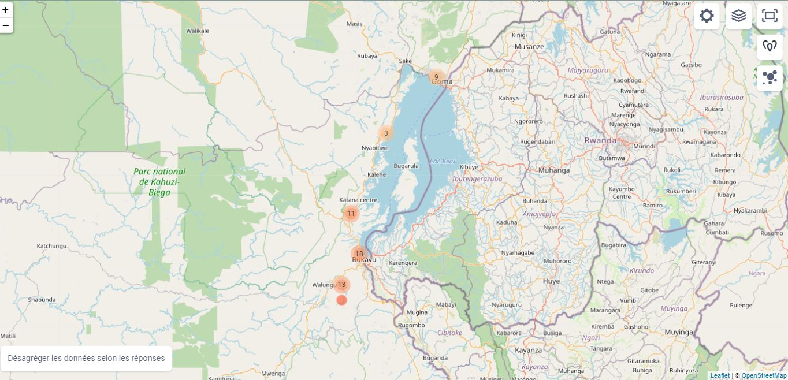
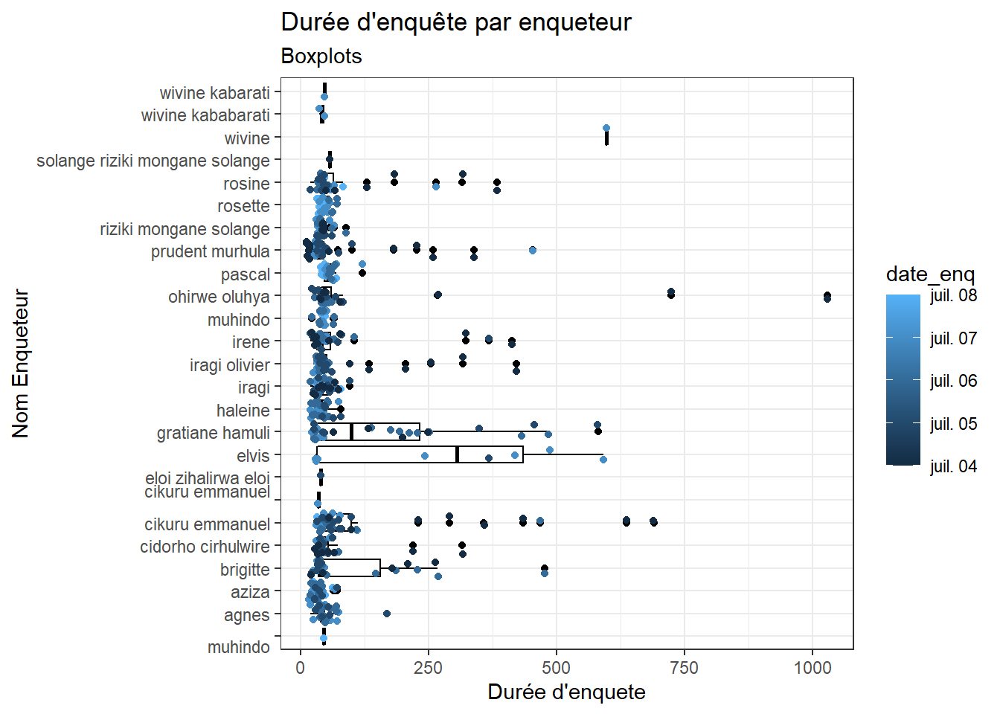

Chapter 2 Data Monitoring
2.1 Carte de l’enquete
 Image construite suite aux points géographiques recoltées dans l’Etude Finale sur la Cohésion Sociale du Projet SPR
2.2 Analyse des donnes
création de la variable durée
Analyse des durée d’enquete pour le premier Jour
## Adding missing grouping variables: `Territoire`| Province | Territoire | Territoire_Commune | n | assignation | Pourcentage |
|---|---|---|---|---|---|
| Nord-Kivu | Masisi | Masisi | 42 | 101 | 42 |
| Nord-Kivu | n/a | Goma | 62 | 101 | 61 |
| Sud-Kivu | Kabare | Kabare | 88 | 101 | 87 |
| Sud-Kivu | Kalehe | Kalehe | 108 | 101 | 107 |
| Sud-Kivu | n/a | Bukavu | 67 | 101 | 66 |
| Sud-Kivu | Walungu | Walungu | 101 | 101 | 100 |
Temps moyen par enqueteur
## `summarise()` has grouped output by 'nom_enqueteur', 'Village'. You can override using the `.groups` argument.| nom_enqueteur | Village | date_enq | temps_moyen |
|---|---|---|---|
| agnes | n/a | 2021-07-05 | 64.16667 |
| agnes | n/a | 2021-07-06 | 49.90000 |
| aziza | n/a | 2021-07-05 | 38.66667 |
| aziza | n/a | 2021-07-06 | 31.41667 |
| aziza | n/a | 2021-07-07 | 32.00000 |
| brigitte | KABULU I | 2021-07-05 | 33.42857 |
| brigitte | KABULU I | 2021-07-06 | 151.00000 |
| brigitte | KABULU II | 2021-07-07 | 36.28571 |
| brigitte | NYABIBWE CENTRE | 2021-07-04 | 142.40000 |
| brigitte | NYABIBWE CENTRE | 2021-07-06 | 173.80000 |
| cidorho cirhulwire | CIHERANO | 2021-07-04 | 98.87500 |
| cidorho cirhulwire | KAHANDA | 2021-07-06 | 43.55556 |
| cidorho cirhulwire | LURHALA CENTRE | 2021-07-05 | 46.25000 |
| cidorho cirhulwire | MAZIGIRO | 2021-07-07 | 44.75000 |
| cikuru emmanuel | n/a | 2021-07-04 | 349.12500 |
| cikuru emmanuel | n/a | 2021-07-05 | 61.18182 |
| cikuru emmanuel | n/a | 2021-07-06 | 96.40000 |
| cikuru emmanuel | n/a | 2021-07-07 | 56.18182 |
| cikuru emmanuel | n/a | 2021-07-07 | 34.00000 |
| eloi zihalirwa eloi | BULOHO II | 2021-07-05 | 39.00000 |
| elvis | KABULU I | 2021-07-05 | 368.00000 |
| elvis | KABULU II | 2021-07-07 | 261.71429 |
| gratiane hamuli | KABULU I | 2021-07-05 | 218.28571 |
| gratiane hamuli | KABULU I | 2021-07-06 | 199.80000 |
| gratiane hamuli | KABULU II | 2021-07-07 | 31.83333 |
| gratiane hamuli | NYABIBWE CENTRE | 2021-07-04 | 160.75000 |
| gratiane hamuli | NYABIBWE CENTRE | 2021-07-06 | 199.50000 |
| haleine | n/a | 2021-07-05 | 55.60000 |
| haleine | n/a | 2021-07-06 | 37.41667 |
| iragi | BULOHO I | 2021-07-05 | 34.66667 |
| iragi | BULOHO II | 2021-07-05 | 50.66667 |
| iragi | BWIMIKA | 2021-07-06 | 42.88889 |
| iragi | KABALE | 2021-07-05 | 96.00000 |
| iragi | KAMAKOMBE | 2021-07-07 | 38.75000 |
| iragi | KARHANDA | 2021-07-04 | 46.50000 |
| iragi | KARHANDA | 2021-07-07 | 29.00000 |
| iragi olivier | BULOHO I | 2021-07-05 | 51.25000 |
| iragi olivier | BULOHO II | 2021-07-05 | 40.20000 |
| iragi olivier | BWIMIKA | 2021-07-06 | 39.42857 |
| iragi olivier | KAMAKOMBE | 2021-07-07 | 33.00000 |
| iragi olivier | KARHANDA | 2021-07-04 | 238.00000 |
| iragi olivier | KARHANDA | 2021-07-06 | 38.00000 |
| iragi olivier | KARHANDA | 2021-07-07 | 39.00000 |
| irene | CIHERANO | 2021-07-04 | 111.66667 |
| irene | KAHANDA | 2021-07-06 | 50.77778 |
| irene | LURHALA CENTRE | 2021-07-05 | 82.25000 |
| irene | MAZIGIRO | 2021-07-07 | 43.00000 |
| muhindo | KALINGA | 2021-07-06 | 43.71429 |
| muhindo | WENDABANDU | 2021-07-07 | 44.28571 |
| ohirwe oluhya | n/a | 2021-07-04 | 283.37500 |
| ohirwe oluhya | n/a | 2021-07-05 | 45.11111 |
| ohirwe oluhya | n/a | 2021-07-06 | 46.55556 |
| pascal | KALINGA | 2021-07-06 | 59.71429 |
| pascal | WENDABANDU | 2021-07-07 | 65.71429 |
| prudent murhula | KABULU I | 2021-07-05 | 54.20000 |
| prudent murhula | KABULU I | 2021-07-06 | 37.60000 |
| prudent murhula | KABULU II | 2021-07-07 | 77.77778 |
| prudent murhula | NYABIBWE CENTRE | 2021-07-04 | 90.84615 |
| prudent murhula | NYABIBWE CENTRE | 2021-07-05 | 44.50000 |
| prudent murhula | NYABIBWE CENTRE | 2021-07-06 | 37.50000 |
| riziki mongane solange | CIHERANO | 2021-07-04 | 42.85714 |
| riziki mongane solange | KAHANDA | 2021-07-06 | 48.37500 |
| riziki mongane solange | LURHALA CENTRE | 2021-07-05 | 43.22222 |
| riziki mongane solange | MAZIGIRO | 2021-07-07 | 42.66667 |
| rosette | KALINGA | 2021-07-06 | 63.83333 |
| rosette | KALINGA | 2021-07-07 | 57.00000 |
| rosette | WENDABANDU | 2021-07-07 | 44.57143 |
| rosine | BULOHO I | 2021-07-05 | 43.60000 |
| rosine | BULOHO II | 2021-07-05 | 40.50000 |
| rosine | BWIMIKA | 2021-07-06 | 39.77778 |
| rosine | KAMAKOMBE | 2021-07-07 | 106.50000 |
| rosine | KARHANDA | 2021-07-04 | 188.16667 |
| rosine | KARHANDA | 2021-07-06 | 40.00000 |
| solange riziki mongane solange | CIHERANO | 2021-07-04 | 56.00000 |
| wivine | KABULU II | 2021-07-07 | 598.00000 |
| wivine kababarati | KABULU II | 2021-07-07 | 41.50000 |
| wivine kabarati | KABULU II | 2021-07-07 | 46.00000 |
2.3 Résumé des données récoltées désagrégées selon le sexe des enquetés
| Caractéristique | Femme, N = 251 | Homme, N = 217 |
|---|---|---|
| temps | 42 (35 – 57) | 44 (36 – 63) |
| nom_enqueteur | ||
| cikuru emmanuel | 22 (8·8%) | 18 (8·3%) |
| prudent murhula | 19 (7·6%) | 21 (9·7%) |
| irene | 18 (7·2%) | 16 (7·4%) |
| cidorho cirhulwire | 19 (7·6%) | 14 (6·5%) |
| riziki mongane solange | 19 (7·6%) | 14 (6·5%) |
| aziza | 16 (6·4%) | 13 (6·0%) |
| iragi | 18 (7·2%) | 11 (5·1%) |
| iragi olivier | 18 (7·2%) | 11 (5·1%) |
| rosine | 15 (6·0%) | 14 (6·5%) |
| brigitte | 26 (10%) | 2 (0·9%) |
| gratiane hamuli | 4 (1·6%) | 24 (11%) |
| ohirwe oluhya | 14 (5·6%) | 12 (5·5%) |
| haleine | 11 (4·4%) | 6 (2·8%) |
| agnes | 7 (2·8%) | 9 (4·1%) |
| muhindo | 6 (2·4%) | 8 (3·7%) |
| pascal | 6 (2·4%) | 8 (3·7%) |
| rosette | 7 (2·8%) | 7 (3·2%) |
| elvis | 3 (1·2%) | 5 (2·3%) |
| wivine kababarati | 0 (0%) | 2 (0·9%) |
| cikuru emmanuel | 1 (0·4%) | 0 (0%) |
| eloi zihalirwa eloi | 0 (0%) | 1 (0·5%) |
| solange riziki mongane solange | 1 (0·4%) | 0 (0%) |
| wivine | 1 (0·4%) | 0 (0%) |
| wivine kabarati | 0 (0%) | 1 (0·5%) |
| consentement | 251 (100%) | 217 (100%) |
| date_enq | ||
| 2021-07-06 | 87 (35%) | 69 (32%) |
| 2021-07-07 | 64 (25%) | 53 (24%) |
| 2021-07-05 | 56 (22%) | 56 (26%) |
| 2021-07-04 | 44 (18%) | 39 (18%) |
| Province | ||
| Sud-Kivu | 198 (79%) | 166 (76%) |
| Nord-Kivu | 53 (21%) | 51 (24%) |
| Ville_territoire | ||
| 2 | 180 (72%) | 159 (73%) |
| 1 | 71 (28%) | 58 (27%) |
| Ville | ||
| n/a | 180 (72%) | 159 (73%) |
| 2 | 37 (15%) | 30 (14%) |
| 1 | 34 (14%) | 28 (13%) |
| Territoire | ||
| n/a | 71 (28%) | 58 (27%) |
| Kalehe | 53 (21%) | 55 (25%) |
| Walungu | 57 (23%) | 44 (20%) |
| Kabare | 51 (20%) | 37 (17%) |
| Masisi | 19 (7·6%) | 23 (11%) |
| Commune | ||
| n/a | 180 (72%) | 159 (73%) |
| Kadutu | 37 (15%) | 30 (14%) |
| Karisimbi | 34 (14%) | 28 (13%) |
| Quartier | ||
| n/a | 180 (72%) | 159 (73%) |
| 8 | 9 (3·6%) | 9 (4·1%) |
| 5 | 10 (4·0%) | 7 (3·2%) |
| 6 | 9 (3·6%) | 8 (3·7%) |
| 11 | 6 (2·4%) | 9 (4·1%) |
| 13 | 8 (3·2%) | 7 (3·2%) |
| 10 | 10 (4·0%) | 4 (1·8%) |
| 17 | 7 (2·8%) | 5 (2·3%) |
| 12 | 6 (2·4%) | 4 (1·8%) |
| 2 | 3 (1·2%) | 3 (1·4%) |
| 7 | 2 (0·8%) | 2 (0·9%) |
| 3 | 1 (0·4%) | 0 (0%) |
| Groupement | ||
| n/a | 71 (28%) | 58 (27%) |
| Mbinga Nord | 53 (21%) | 55 (25%) |
| Lurhala | 57 (23%) | 44 (20%) |
| Bugore | 51 (20%) | 37 (17%) |
| Biiri | 19 (7·6%) | 23 (11%) |
| Village | ||
| n/a | 71 (28%) | 58 (27%) |
| NYABIBWE CENTRE | 19 (7·6%) | 22 (10%) |
| KABULU I | 17 (6·8%) | 17 (7·8%) |
| KABULU II | 17 (6·8%) | 16 (7·4%) |
| KAHANDA | 18 (7·2%) | 8 (3·7%) |
| BWIMIKA | 14 (5·6%) | 11 (5·1%) |
| CIHERANO | 13 (5·2%) | 12 (5·5%) |
| KARHANDA | 15 (6·0%) | 10 (4·6%) |
| LURHALA CENTRE | 12 (4·8%) | 13 (6·0%) |
| MAZIGIRO | 14 (5·6%) | 11 (5·1%) |
| KALINGA | 10 (4·0%) | 11 (5·1%) |
| WENDABANDU | 9 (3·6%) | 12 (5·5%) |
| BULOHO II | 8 (3·2%) | 5 (2·3%) |
| BULOHO I | 6 (2·4%) | 6 (2·8%) |
| KAMAKOMBE | 8 (3·2%) | 4 (1·8%) |
| KABALE | 0 (0%) | 1 (0·5%) |
| Tranche_age | ||
| 1 | 162 (65%) | 125 (58%) |
| 2 | 55 (22%) | 53 (24%) |
| 3 | 28 (11%) | 30 (14%) |
| 4 | 6 (2·4%) | 9 (4·1%) |
| Etat_civil | ||
| Marié(e) | 112 (45%) | 119 (55%) |
| Célibataire | 90 (36%) | 85 (39%) |
| Veuf (ve) | 24 (9·6%) | 8 (3·7%) |
| Séparé(e) | 20 (8·0%) | 4 (1·8%) |
| Divorcé(e) | 4 (1·6%) | 1 (0·5%) |
| Sans réponse | 1 (0·4%) | 0 (0%) |
| Margin_group/Handicaps_obseves/1 | ||
| False | 59 (24%) | 131 (60%) |
| n/a | 67 (27%) | 80 (37%) |
| True | 125 (50%) | 6 (2·8%) |
| Margin_group/Handicaps_obseves/2 | ||
| False | 164 (65%) | 114 (53%) |
| n/a | 67 (27%) | 80 (37%) |
| True | 20 (8·0%) | 23 (11%) |
| Margin_group/Handicaps_obseves/3 | ||
| False | 183 (73%) | 130 (60%) |
| n/a | 67 (27%) | 80 (37%) |
| True | 1 (0·4%) | 7 (3·2%) |
| Margin_group/Handicaps_obseves/4 | ||
| False | 181 (72%) | 135 (62%) |
| n/a | 67 (27%) | 80 (37%) |
| True | 3 (1·2%) | 2 (0·9%) |
| Margin_group/Handicaps_obseves/5 | ||
| False | 182 (73%) | 133 (61%) |
| n/a | 67 (27%) | 80 (37%) |
| True | 2 (0·8%) | 4 (1·8%) |
| Margin_group/Handicaps_obseves/6 | ||
| False | 174 (69%) | 127 (59%) |
| n/a | 67 (27%) | 80 (37%) |
| True | 10 (4·0%) | 10 (4·6%) |
| Margin_group/Handicaps_obseves/7 | ||
| False | 182 (73%) | 112 (52%) |
| n/a | 67 (27%) | 80 (37%) |
| True | 2 (0·8%) | 25 (12%) |
| Margin_group/Handicaps_obseves/8 | ||
| False | 158 (63%) | 137 (63%) |
| n/a | 67 (27%) | 80 (37%) |
| True | 26 (10%) | 0 (0%) |
| Margin_group/Handicaps_obseves/9 | ||
| False | 163 (65%) | 121 (56%) |
| n/a | 67 (27%) | 80 (37%) |
| True | 21 (8·4%) | 16 (7·4%) |
| Margin_group/Handicaps_obseves/10 | ||
| False | 180 (72%) | 137 (63%) |
| n/a | 67 (27%) | 80 (37%) |
| True | 4 (1·6%) | 0 (0%) |
| Margin_group/Handicaps_obseves/11 | ||
| False | 166 (66%) | 81 (37%) |
| n/a | 67 (27%) | 80 (37%) |
| True | 18 (7·2%) | 56 (26%) |
| Margin_group/autres_handicaps | ||
| n/a | 235 (94%) | 162 (75%) |
| Rien | 0 (0%) | 22 (10%) |
| Rien à signaler | 3 (1·2%) | 5 (2·3%) |
| Homme | 0 (0%) | 5 (2·3%) |
| Garçon | 0 (0%) | 4 (1·8%) |
| Fille | 3 (1·2%) | 0 (0%) |
| Aucun | 2 (0·8%) | 0 (0%) |
| Aucun handicap | 1 (0·4%) | 1 (0·5%) |
| Jeune garçon | 0 (0%) | 2 (0·9%) |
| NORMALE | 2 (0·8%) | 0 (0%) |
| Pas d’handicap | 0 (0%) | 2 (0·9%) |
| PAS D’HANDICAP | 0 (0%) | 2 (0·9%) |
| GARÇON | 0 (0%) | 1 (0·5%) |
| Garçon déplacé | 0 (0%) | 1 (0·5%) |
| homme | 0 (0%) | 1 (0·5%) |
| HOMME | 0 (0%) | 1 (0·5%) |
| Homme normalement | 0 (0%) | 1 (0·5%) |
| Jeune | 1 (0·4%) | 0 (0%) |
| JEUNE | 0 (0%) | 1 (0·5%) |
| Jeune fille | 1 (0·4%) | 0 (0%) |
| JEUNE FILLE | 1 (0·4%) | 0 (0%) |
| jeune garçon | 0 (0%) | 1 (0·5%) |
| Jeune garçon vulnérable | 0 (0%) | 1 (0·5%) |
| Jeune vulnérable | 0 (0%) | 1 (0·5%) |
| Pas d’hadicap | 1 (0·4%) | 0 (0%) |
| PAS DHANDICAP | 0 (0%) | 1 (0·5%) |
| PAS DHANFICAP | 0 (0%) | 1 (0·5%) |
| RIEN | 1 (0·4%) | 0 (0%) |
| Rien à indiqué | 0 (0%) | 1 (0·5%) |
| Niveau_etude | ||
| 4 | 62 (25%) | 65 (30%) |
| 3 | 49 (20%) | 42 (19%) |
| 1 | 63 (25%) | 27 (12%) |
| 5 | 42 (17%) | 38 (18%) |
| 2 | 23 (9·2%) | 13 (6·0%) |
| 6 | 9 (3·6%) | 20 (9·2%) |
| 7 | 3 (1·2%) | 8 (3·7%) |
| 8 | 0 (0%) | 2 (0·9%) |
| 9 | 0 (0%) | 2 (0·9%) |
| Activite_principale | 2·00 (1·00 – 5·00) | 3·00 (2·00 – 7·00) |
| autre_activite | ||
| n/a | 220 (88%) | 177 (82%) |
| Élève | 4 (1·6%) | 4 (1·8%) |
| COUTURIERE | 3 (1·2%) | 0 (0%) |
| Tailleur | 3 (1·2%) | 0 (0%) |
| Coiffeur | 0 (0%) | 2 (0·9%) |
| Couturière | 2 (0·8%) | 0 (0%) |
| Eleve | 1 (0·4%) | 1 (0·5%) |
| Infirmier | 1 (0·4%) | 1 (0·5%) |
| Motard | 0 (0%) | 2 (0·9%) |
| Tailleuse | 2 (0·8%) | 0 (0%) |
| Taximan | 0 (0%) | 2 (0·9%) |
| Agent de sécurité.BIFFALO | 0 (0%) | 1 (0·5%) |
| Ambulants | 0 (0%) | 1 (0·5%) |
| Aucun, mais il était infirmier avant son incapacité | 0 (0%) | 1 (0·5%) |
| Carellaire | 1 (0·4%) | 0 (0%) |
| Chauffeur | 0 (0%) | 1 (0·5%) |
| Chauffeur mécanicien | 0 (0%) | 1 (0·5%) |
| Chef de village | 0 (0%) | 1 (0·5%) |
| Conducteur de moto | 0 (0%) | 1 (0·5%) |
| Coordonier | 0 (0%) | 1 (0·5%) |
| COORDONNIER | 0 (0%) | 1 (0·5%) |
| Coupe couture | 1 (0·4%) | 0 (0%) |
| Couturier | 1 (0·4%) | 0 (0%) |
| Creuser artisanal | 0 (0%) | 1 (0·5%) |
| Débrouillard | 0 (0%) | 1 (0·5%) |
| Élève. | 0 (0%) | 1 (0·5%) |
| Élèves | 1 (0·4%) | 0 (0%) |
| Elle étudie | 1 (0·4%) | 0 (0%) |
| Etudiant | 0 (0%) | 1 (0·5%) |
| Étudiant | 1 (0·4%) | 0 (0%) |
| Étudiante | 1 (0·4%) | 0 (0%) |
| Etudie | 1 (0·4%) | 0 (0%) |
| EXPLOITATION MINE | 0 (0%) | 1 (0·5%) |
| Formation couturière | 1 (0·4%) | 0 (0%) |
| Je me débrouie, tout travail que je trouve, Je le fais sans complexe. | 0 (0%) | 1 (0·5%) |
| Maçon | 0 (0%) | 1 (0·5%) |
| Maître Avocat | 0 (0%) | 1 (0·5%) |
| menuiserie | 0 (0%) | 1 (0·5%) |
| Ménuisier | 0 (0%) | 1 (0·5%) |
| Pas d’activité, suis tout le toujours à la maison avec les enfants | 0 (0%) | 1 (0·5%) |
| Petit commerce | 1 (0·4%) | 0 (0%) |
| Petite commerçante | 1 (0·4%) | 0 (0%) |
| Pharmacien | 0 (0%) | 1 (0·5%) |
| Photographe | 0 (0%) | 1 (0·5%) |
| Porteur des fardeaux | 0 (0%) | 1 (0·5%) |
| Responsable d’un petit restaurant | 1 (0·4%) | 0 (0%) |
| SENTINELLE | 0 (0%) | 1 (0·5%) |
| Soudeur et plombier | 0 (0%) | 1 (0·5%) |
| Transporteuse des briques | 1 (0·4%) | 0 (0%) |
| Tresse les cheveux | 1 (0·4%) | 0 (0%) |
| Un gardien de sécurité | 1 (0·4%) | 0 (0%) |
| V unite | 0 (0%) | 1 (0·5%) |
| Vente unité | 0 (0%) | 1 (0·5%) |
| Vétérinaire | 0 (0%) | 1 (0·5%) |
| Duration_milieux | 11 (5 – 24) | 15 (5 – 30) |
| relations_entre_personnes/Relation_famille | ||
| 4 | 136 (54%) | 113 (52%) |
| 5 | 79 (31%) | 75 (35%) |
| 3 | 26 (10%) | 21 (9·7%) |
| 2 | 8 (3·2%) | 7 (3·2%) |
| 1 | 2 (0·8%) | 1 (0·5%) |
| relations_entre_personnes/Relation_voisins | ||
| 4 | 140 (56%) | 115 (53%) |
| 3 | 79 (31%) | 66 (30%) |
| 5 | 19 (7·6%) | 26 (12%) |
| 2 | 12 (4·8%) | 9 (4·1%) |
| 1 | 1 (0·4%) | 1 (0·5%) |
| relations_entre_personnes/Relation_amiscollegues_autres_communautaires | ||
| 4 | 142 (57%) | 118 (54%) |
| 3 | 77 (31%) | 65 (30%) |
| 5 | 25 (10·0%) | 28 (13%) |
| 2 | 6 (2·4%) | 4 (1·8%) |
| 1 | 1 (0·4%) | 2 (0·9%) |
| relations_entre_personnes/Relation_membres_de_votre_groupe_ethnique | ||
| 4 | 127 (51%) | 108 (50%) |
| 3 | 91 (36%) | 82 (38%) |
| 5 | 18 (7·2%) | 21 (9·7%) |
| 2 | 14 (5·6%) | 6 (2·8%) |
| 1 | 1 (0·4%) | 0 (0%) |
| relations_entre_personnes/Relation__autre_groupe_ethnique_non_congolais | ||
| 3 | 106 (42%) | 100 (46%) |
| 4 | 92 (37%) | 83 (38%) |
| 1 | 25 (10·0%) | 13 (6·0%) |
| 2 | 22 (8·8%) | 12 (5·5%) |
| 5 | 6 (2·4%) | 9 (4·1%) |
| relations_entre_personnes/Relation_congolais_autre_groupe_ethnique | ||
| 3 | 112 (45%) | 104 (48%) |
| 4 | 68 (27%) | 58 (27%) |
| 1 | 41 (16%) | 30 (14%) |
| 2 | 26 (10%) | 18 (8·3%) |
| 5 | 4 (1·6%) | 7 (3·2%) |
| Frequence_Contact_Congolais_Autre_Groupes_Ethni | ||
| 1 | 88 (35%) | 99 (46%) |
| 4 | 66 (26%) | 43 (20%) |
| 2 | 58 (23%) | 42 (19%) |
| 3 | 21 (8·4%) | 21 (9·7%) |
| 5 | 18 (7·2%) | 12 (5·5%) |
| Participation_Ensemble/Freq_Part_Ceremonie_Culturelle | ||
| 2 | 60 (24%) | 72 (33%) |
| 4 | 77 (31%) | 54 (25%) |
| 1 | 51 (20%) | 40 (18%) |
| 3 | 45 (18%) | 35 (16%) |
| 5 | 18 (7·2%) | 16 (7·4%) |
| Participation_Ensemble/Freq_Part_Meme_Eglise | ||
| 2 | 101 (40%) | 87 (40%) |
| 1 | 67 (27%) | 59 (27%) |
| 4 | 53 (21%) | 41 (19%) |
| 3 | 15 (6·0%) | 17 (7·8%) |
| 5 | 15 (6·0%) | 13 (6·0%) |
| Participation_Ensemble/Freq_Part_Travail_Ensemble | ||
| 1 | 82 (33%) | 94 (43%) |
| 4 | 74 (29%) | 57 (26%) |
| 2 | 51 (20%) | 36 (17%) |
| 5 | 23 (9·2%) | 15 (6·9%) |
| 3 | 21 (8·4%) | 15 (6·9%) |
| Participation_Ensemble/Freq_Mariage_InterEthnique | ||
| 4 | 67 (27%) | 51 (24%) |
| 2 | 50 (20%) | 49 (23%) |
| 3 | 50 (20%) | 37 (17%) |
| 5 | 40 (16%) | 46 (21%) |
| 1 | 44 (18%) | 34 (16%) |
| DIM1_4_1 | ||
| 1 | 117 (47%) | 105 (48%) |
| 2 | 81 (32%) | 73 (34%) |
| 4 | 33 (13%) | 24 (11%) |
| 3 | 20 (8·0%) | 15 (6·9%) |
| DIM1_4_2 | ||
| 1 | 137 (55%) | 115 (53%) |
| 2 | 64 (25%) | 58 (27%) |
| 4 | 38 (15%) | 26 (12%) |
| 3 | 12 (4·8%) | 18 (8·3%) |
| DIM1_4_3 | ||
| 1 | 118 (47%) | 105 (48%) |
| 2 | 81 (32%) | 63 (29%) |
| 4 | 29 (12%) | 26 (12%) |
| 3 | 23 (9·2%) | 23 (11%) |
| DIM1_4_4 | ||
| 1 | 140 (56%) | 115 (53%) |
| 2 | 56 (22%) | 55 (25%) |
| 4 | 36 (14%) | 28 (13%) |
| 3 | 19 (7·6%) | 19 (8·8%) |
| DIM1_5_1 | ||
| 1 | 120 (48%) | 103 (47%) |
| 2 | 60 (24%) | 57 (26%) |
| 4 | 51 (20%) | 32 (15%) |
| 3 | 20 (8·0%) | 25 (12%) |
| DIM1_5_2 | ||
| 1 | 134 (53%) | 110 (51%) |
| 2 | 45 (18%) | 50 (23%) |
| 4 | 57 (23%) | 36 (17%) |
| 3 | 15 (6·0%) | 21 (9·7%) |
| DIM1_5_3 | ||
| 1 | 111 (44%) | 93 (43%) |
| 2 | 59 (24%) | 66 (30%) |
| 4 | 50 (20%) | 29 (13%) |
| 3 | 31 (12%) | 29 (13%) |
| DIM1_5_4 | ||
| 1 | 119 (47%) | 108 (50%) |
| 2 | 51 (20%) | 53 (24%) |
| 4 | 54 (22%) | 34 (16%) |
| 3 | 27 (11%) | 22 (10%) |
| DIM1_6 | ||
| 3 | 84 (33%) | 63 (29%) |
| 2 | 73 (29%) | 73 (34%) |
| 1 | 60 (24%) | 64 (29%) |
| 4 | 34 (14%) | 17 (7·8%) |
| DIM1_7/1 | 70 (28%) | 70 (32%) |
| DIM1_7/2 | 121 (48%) | 93 (43%) |
| DIM1_7/3 | 62 (25%) | 75 (35%) |
| DIM1_7/4 | 67 (27%) | 68 (31%) |
| DIM1_7/5 | 61 (24%) | 51 (24%) |
| DIM1_7/6 | 26 (10%) | 20 (9·2%) |
| DIM1_7/7 | 28 (11%) | 26 (12%) |
| DIM1_7/8 | 38 (15%) | 54 (25%) |
| DIM1_7/9 | 68 (27%) | 66 (30%) |
| DIM1_7/10 | 21 (8·4%) | 8 (3·7%) |
| DIM1_7/11 | 6 (2·4%) | 5 (2·3%) |
| DIM1_7/12 | 14 (5·6%) | 6 (2·8%) |
| DIM1_7a | ||
| n/a | 240 (96%) | 213 (98%) |
| Ils ne sont pas ici | 2 (0·8%) | 0 (0%) |
| Avoir les leaders qui peuvent plaider pour nous | 1 (0·4%) | 0 (0%) |
| Changement de mentalité | 1 (0·4%) | 0 (0%) |
| Changer la mentalité des autorités | 0 (0%) | 1 (0·5%) |
| IL FAUT QU’IL Y EST LA PAIX POUR QUE CHAQUE PEUPLE REGAGNE SON MILIEU D’ORIGINE | 1 (0·4%) | 0 (0%) |
| Ils ne sont pas chez nous | 1 (0·4%) | 0 (0%) |
| Ils ne sont pas ici chez nous | 1 (0·4%) | 0 (0%) |
| Je ne sais rien. Nous ne sommes que bashi ici | 1 (0·4%) | 0 (0%) |
| Le fait être sédentaire | 0 (0%) | 1 (0·5%) |
| Ne pas les accueillir | 0 (0%) | 1 (0·5%) |
| Nous sommes seulement des shi | 1 (0·4%) | 0 (0%) |
| Pas de gens d’autre tribub ici | 0 (0%) | 1 (0·5%) |
| Prôner l’amour | 1 (0·4%) | 0 (0%) |
| S’ASSOIR EN ENSEMBLE | 1 (0·4%) | 0 (0%) |
| 2/DIM2_1/A | ||
| True | 136 (54%) | 123 (57%) |
| False | 110 (44%) | 90 (41%) |
| n/a | 5 (2·0%) | 4 (1·8%) |
| 2/DIM2_1/B | ||
| True | 154 (61%) | 135 (62%) |
| False | 92 (37%) | 78 (36%) |
| n/a | 5 (2·0%) | 4 (1·8%) |
| 2/DIM2_1/C | ||
| False | 149 (59%) | 108 (50%) |
| True | 97 (39%) | 105 (48%) |
| n/a | 5 (2·0%) | 4 (1·8%) |
| 2/DIM2_1/D | ||
| False | 140 (56%) | 140 (65%) |
| True | 106 (42%) | 73 (34%) |
| n/a | 5 (2·0%) | 4 (1·8%) |
| 2/DIM2_1/E | ||
| False | 212 (84%) | 183 (84%) |
| True | 34 (14%) | 30 (14%) |
| n/a | 5 (2·0%) | 4 (1·8%) |
| 2/DIM2_1/F | ||
| False | 188 (75%) | 147 (68%) |
| True | 58 (23%) | 66 (30%) |
| n/a | 5 (2·0%) | 4 (1·8%) |
| 2/DIM2_1/G | ||
| False | 169 (67%) | 156 (72%) |
| True | 77 (31%) | 57 (26%) |
| n/a | 5 (2·0%) | 4 (1·8%) |
| 2/DIM2_1/H | ||
| False | 183 (73%) | 169 (78%) |
| True | 63 (25%) | 44 (20%) |
| n/a | 5 (2·0%) | 4 (1·8%) |
| 2/DIM2_1/I | ||
| False | 174 (69%) | 157 (72%) |
| True | 72 (29%) | 56 (26%) |
| n/a | 5 (2·0%) | 4 (1·8%) |
| 2/DIM2_1/J | ||
| False | 194 (77%) | 172 (79%) |
| True | 52 (21%) | 41 (19%) |
| n/a | 5 (2·0%) | 4 (1·8%) |
| 2/DIM2_1/K | ||
| False | 175 (70%) | 153 (71%) |
| True | 71 (28%) | 60 (28%) |
| n/a | 5 (2·0%) | 4 (1·8%) |
| 2/DIM2_2/DIM2_2_1 | ||
| 3 | 110 (44%) | 82 (38%) |
| 4 | 83 (33%) | 76 (35%) |
| 2 | 37 (15%) | 38 (18%) |
| 1 | 13 (5·2%) | 14 (6·5%) |
| 5 | 8 (3·2%) | 7 (3·2%) |
| 2/DIM2_2/DIM2_2_2 | ||
| 3 | 132 (53%) | 99 (46%) |
| 4 | 66 (26%) | 59 (27%) |
| 2 | 31 (12%) | 32 (15%) |
| 1 | 21 (8·4%) | 18 (8·3%) |
| 5 | 1 (0·4%) | 9 (4·1%) |
| 2/DIM2_2/DIM2_2_3 | ||
| 3 | 96 (38%) | 89 (41%) |
| 1 | 70 (28%) | 59 (27%) |
| 2 | 59 (24%) | 46 (21%) |
| 4 | 25 (10·0%) | 19 (8·8%) |
| 5 | 1 (0·4%) | 4 (1·8%) |
| 2/DIM2_2/DIM2_2_4 | ||
| 1 | 113 (45%) | 92 (42%) |
| 2 | 65 (26%) | 57 (26%) |
| 3 | 63 (25%) | 52 (24%) |
| 4 | 9 (3·6%) | 13 (6·0%) |
| 5 | 1 (0·4%) | 3 (1·4%) |
| 2/DIM2_3/a | 78 (31%) | 79 (36%) |
| 2/DIM2_3/b | 79 (31%) | 69 (32%) |
| 2/DIM2_3/c | 116 (46%) | 85 (39%) |
| 2/DIM2_3/d | 94 (37%) | 64 (29%) |
| 2/DIM2_3/e | 73 (29%) | 66 (30%) |
| 2/DIM2_3/f | 52 (21%) | 57 (26%) |
| 2/DIM2_3/g | 55 (22%) | 53 (24%) |
| 2/DIM2_3/h | 3 (1·2%) | 3 (1·4%) |
| 2/DIM2_3/i | 10 (4·0%) | 6 (2·8%) |
| 2/DIM2_3/j | 34 (14%) | 26 (12%) |
| 2/DIM2_3/k | 20 (8·0%) | 14 (6·5%) |
| 2/DIM2_3/l | 5 (2·0%) | 5 (2·3%) |
| 2/DIM2_3a | ||
| n/a | 246 (98%) | 212 (98%) |
| Arrêt des conflits | 1 (0·4%) | 0 (0%) |
| Ces gens ne sont pas ici | 0 (0%) | 1 (0·5%) |
| Des loisirs entre eux | 0 (0%) | 1 (0·5%) |
| Éviter les jalousies | 1 (0·4%) | 0 (0%) |
| il faut éradiquer le tribalisme | 0 (0%) | 1 (0·5%) |
| Il faut que les tribus se pardonnent. | 1 (0·4%) | 0 (0%) |
| Il n’y a pas d’autres groupes ethniques ! | 1 (0·4%) | 0 (0%) |
| Integegration des toutes les couches dans toutes les activite sans distinction encourager le mariage avec d’autres tribut non congolais | 0 (0%) | 1 (0·5%) |
| Le respect de tout un chacun | 0 (0%) | 1 (0·5%) |
| Mettre en place des groupes des discussions | 1 (0·4%) | 0 (0%) |
| 2/DIM2_4 | ||
| 4 | 92 (37%) | 97 (45%) |
| 3 | 74 (29%) | 58 (27%) |
| 5 | 63 (25%) | 45 (21%) |
| 2 | 22 (8·8%) | 14 (6·5%) |
| 1 | 0 (0%) | 3 (1·4%) |
| 2/DIM2_5 | ||
| 3 | 121 (48%) | 105 (48%) |
| 2 | 58 (23%) | 52 (24%) |
| 4 | 57 (23%) | 47 (22%) |
| 1 | 11 (4·4%) | 9 (4·1%) |
| 5 | 4 (1·6%) | 4 (1·8%) |
| 2/DIM2_6 | ||
| 3 | 140 (56%) | 114 (53%) |
| 2 | 51 (20%) | 48 (22%) |
| 4 | 42 (17%) | 40 (18%) |
| 1 | 12 (4·8%) | 9 (4·1%) |
| 5 | 6 (2·4%) | 6 (2·8%) |
| 2/DIM2_7 | ||
| 3 | 103 (41%) | 97 (45%) |
| 2 | 95 (38%) | 76 (35%) |
| 1 | 33 (13%) | 23 (11%) |
| 4 | 19 (7·6%) | 20 (9·2%) |
| 5 | 1 (0·4%) | 1 (0·5%) |
| 2/DIM2_8 | ||
| 2 | 96 (38%) | 87 (40%) |
| 1 | 70 (28%) | 60 (28%) |
| 3 | 68 (27%) | 57 (26%) |
| 4 | 15 (6·0%) | 13 (6·0%) |
| 5 | 2 (0·8%) | 0 (0%) |
| 2/DIM2_9/a | 39 (16%) | 33 (15%) |
| 2/DIM2_9/b | 88 (35%) | 78 (36%) |
| 2/DIM2_9/c | 51 (20%) | 64 (29%) |
| 2/DIM2_9/d | 47 (19%) | 42 (19%) |
| 2/DIM2_9/e | 67 (27%) | 51 (24%) |
| 2/DIM2_9/f | 52 (21%) | 39 (18%) |
| 2/DIM2_9/g | 32 (13%) | 32 (15%) |
| 2/DIM2_9/h | 17 (6·8%) | 17 (7·8%) |
| 2/DIM2_9/i | 12 (4·8%) | 19 (8·8%) |
| 2/DIM2_9/j | 29 (12%) | 24 (11%) |
| 2/DIM2_9/k | 11 (4·4%) | 9 (4·1%) |
| 2/DIM2_9/l | 5 (2·0%) | 1 (0·5%) |
| 2/DIM2_9/m | 25 (10·0%) | 17 (7·8%) |
| 2/DIM2_9/n | 3 (1·2%) | 1 (0·5%) |
| 2/DIM2_9/o | 17 (6·8%) | 4 (1·8%) |
| 2/DIM2_9/p | 5 (2·0%) | 3 (1·4%) |
| 2/DIM2_9a | ||
| n/a | 246 (98%) | 214 (99%) |
| Chez nous il n’y a pas d’autres groupes ethniques | 1 (0·4%) | 0 (0%) |
| Créer de bonne relation | 0 (0%) | 1 (0·5%) |
| Créer Les conditions de la paix durable | 1 (0·4%) | 0 (0%) |
| Éviter de soupçons | 1 (0·4%) | 0 (0%) |
| Faire de mixages dans les services étatiques et privés et financer les associations locales pour sensibiliser la communauté locale à la cohabitation pacifique. Voire les hutu,les guides,les tutsi | 0 (0%) | 1 (0·5%) |
| L’ entraides | 1 (0·4%) | 0 (0%) |
| L’amour | 0 (0%) | 1 (0·5%) |
| LA CONFIANCE POUR MOI NEST PAS TRES FACILE | 1 (0·4%) | 0 (0%) |
| 3/DIM3_1/DIM3_1_1 | ||
| 3 | 104 (41%) | 77 (35%) |
| 4 | 72 (29%) | 58 (27%) |
| 2 | 54 (22%) | 59 (27%) |
| 1 | 16 (6·4%) | 18 (8·3%) |
| 5 | 5 (2·0%) | 5 (2·3%) |
| 3/DIM3_1/DIM3_1_2 | ||
| 3 | 116 (46%) | 85 (39%) |
| 2 | 73 (29%) | 57 (26%) |
| 4 | 41 (16%) | 50 (23%) |
| 1 | 18 (7·2%) | 20 (9·2%) |
| 5 | 3 (1·2%) | 5 (2·3%) |
| 3/DIM3_1/DIM3_1_3 | ||
| 2 | 92 (37%) | 73 (34%) |
| 3 | 86 (34%) | 66 (30%) |
| 4 | 41 (16%) | 43 (20%) |
| 1 | 30 (12%) | 28 (13%) |
| 5 | 2 (0·8%) | 7 (3·2%) |
| 3/DIM3_1/DIM3_1_4 | ||
| 2 | 91 (36%) | 75 (35%) |
| 3 | 76 (30%) | 57 (26%) |
| 1 | 58 (23%) | 51 (24%) |
| 4 | 25 (10·0%) | 32 (15%) |
| 5 | 1 (0·4%) | 2 (0·9%) |
| 3/DIM3_1/DIM3_1_5 | ||
| 1 | 98 (39%) | 84 (39%) |
| 2 | 83 (33%) | 75 (35%) |
| 3 | 53 (21%) | 42 (19%) |
| 4 | 16 (6·4%) | 15 (6·9%) |
| 5 | 1 (0·4%) | 1 (0·5%) |
| 3/DIM3_1/DIM3_1_6 | ||
| 1 | 110 (44%) | 91 (42%) |
| 2 | 86 (34%) | 74 (34%) |
| 3 | 42 (17%) | 39 (18%) |
| 4 | 12 (4·8%) | 13 (6·0%) |
| 5 | 1 (0·4%) | 0 (0%) |
| 3/DIM3_1/DIM3_1_7 | ||
| 3 | 97 (39%) | 89 (41%) |
| 4 | 82 (33%) | 71 (33%) |
| 2 | 50 (20%) | 35 (16%) |
| 1 | 12 (4·8%) | 14 (6·5%) |
| 5 | 10 (4·0%) | 8 (3·7%) |
| 3/DIM3_1/DIM3_1_8 | ||
| 4 | 102 (41%) | 85 (39%) |
| 3 | 63 (25%) | 62 (29%) |
| 5 | 57 (23%) | 42 (19%) |
| 2 | 24 (9·6%) | 21 (9·7%) |
| 1 | 5 (2·0%) | 7 (3·2%) |
| 3/DIM3_1/DIM3_1_9 | ||
| 3 | 127 (51%) | 99 (46%) |
| 4 | 47 (19%) | 58 (27%) |
| 2 | 49 (20%) | 35 (16%) |
| 1 | 18 (7·2%) | 20 (9·2%) |
| 5 | 10 (4·0%) | 5 (2·3%) |
| 3/DIM3_1/DIM3_1_10 | ||
| 3 | 114 (45%) | 85 (39%) |
| 4 | 46 (18%) | 59 (27%) |
| 2 | 52 (21%) | 43 (20%) |
| 1 | 35 (14%) | 25 (12%) |
| 5 | 4 (1·6%) | 5 (2·3%) |
| 3/DIM3_1/DIM3_1_11 | ||
| 3 | 89 (35%) | 60 (28%) |
| 2 | 77 (31%) | 63 (29%) |
| 1 | 73 (29%) | 66 (30%) |
| 4 | 11 (4·4%) | 27 (12%) |
| 5 | 1 (0·4%) | 1 (0·5%) |
| 3/DIM3_2/a | 120 (48%) | 120 (55%) |
| 3/DIM3_2/b | 72 (29%) | 84 (39%) |
| 3/DIM3_2/c | 114 (45%) | 101 (47%) |
| 3/DIM3_2/d | 45 (18%) | 42 (19%) |
| 3/DIM3_2/e | 91 (36%) | 56 (26%) |
| 3/DIM3_2/f | 88 (35%) | 63 (29%) |
| 3/DIM3_2/g | 19 (7·6%) | 26 (12%) |
| 3/DIM3_2/h | 50 (20%) | 34 (16%) |
| 3/DIM3_2/i | 6 (2·4%) | 4 (1·8%) |
| 3/DIM3_2/j | 1 (0·4%) | 1 (0·5%) |
| 3/DIM3_2/k | 12 (4·8%) | 12 (5·5%) |
| 3/DIM3_2a | ||
| n/a | 239 (95%) | 205 (94%) |
| Aider la population | 1 (0·4%) | 0 (0%) |
| AIMER TOUT LE MONDE AU MÊME POINT D’ÉGALITÉ | 0 (0%) | 1 (0·5%) |
| Autorité ayant le soucis de la population | 1 (0·4%) | 0 (0%) |
| Considération egale | 0 (0%) | 1 (0·5%) |
| Des autorités conscientes | 0 (0%) | 1 (0·5%) |
| DES NON TRIBAL | 1 (0·4%) | 0 (0%) |
| Développement | 0 (0%) | 1 (0·5%) |
| Être proche de la population | 0 (0%) | 1 (0·5%) |
| ÊTRE SOCIAL ET SAVOIR COMMUNIQUER AVEC LES GENS | 1 (0·4%) | 0 (0%) |
| Éviter la discrimination et la haine envers la population | 0 (0%) | 1 (0·5%) |
| Formation de tous les chefs | 1 (0·4%) | 0 (0%) |
| Il faut éradiquer l’impunité. | 0 (0%) | 1 (0·5%) |
| Les chefs doivent être impartiaux | 1 (0·4%) | 0 (0%) |
| Lutter pour la paix , Éviter la discrimination | 1 (0·4%) | 0 (0%) |
| Nous donner un bon travail, valoriser nos diplômes | 1 (0·4%) | 0 (0%) |
| Nous donner un élevage | 0 (0%) | 1 (0·5%) |
| On doit oublier le passé | 0 (0%) | 1 (0·5%) |
| Prendre en charges les démobilisé. | 0 (0%) | 1 (0·5%) |
| QU’ILS SOIENT UNIS ET COLLABORANTS | 1 (0·4%) | 0 (0%) |
| Que les autorités nous aiment comme leurs propres enfants | 1 (0·4%) | 0 (0%) |
| QUILS SE RESPECTENT EUX MEME D’ABORD | 1 (0·4%) | 0 (0%) |
| Renforcer en capacité nos autorités | 0 (0%) | 1 (0·5%) |
| Sensibilisation, rapprochement de la population | 0 (0%) | 1 (0·5%) |
| Sensibiliser toute la communauté à la cohésion sociale | 1 (0·4%) | 0 (0%) |
| 4/DIM4_1/DIM4_1_1 | ||
| 2 | 97 (39%) | 82 (38%) |
| 4 | 66 (26%) | 73 (34%) |
| 3 | 35 (14%) | 31 (14%) |
| 1 | 32 (13%) | 18 (8·3%) |
| 5 | 21 (8·4%) | 13 (6·0%) |
| 4/DIM4_1/DIM4_1_2 | ||
| 2 | 120 (48%) | 107 (49%) |
| 3 | 51 (20%) | 39 (18%) |
| 4 | 37 (15%) | 45 (21%) |
| 1 | 40 (16%) | 21 (9·7%) |
| 5 | 3 (1·2%) | 5 (2·3%) |
| 4/DIM4_1/DIM4_1_3 | ||
| 2 | 91 (36%) | 78 (36%) |
| 4 | 69 (27%) | 69 (32%) |
| 3 | 55 (22%) | 45 (21%) |
| 1 | 30 (12%) | 21 (9·7%) |
| 5 | 6 (2·4%) | 4 (1·8%) |
| 4/DIM4_1/DIM4_1_4 | ||
| 4 | 87 (35%) | 89 (41%) |
| 2 | 78 (31%) | 65 (30%) |
| 3 | 55 (22%) | 49 (23%) |
| 1 | 22 (8·8%) | 12 (5·5%) |
| 5 | 9 (3·6%) | 2 (0·9%) |
| 4/DIM4_1/DIM4_1_5 | ||
| 4 | 131 (52%) | 129 (59%) |
| 2 | 44 (18%) | 35 (16%) |
| 3 | 37 (15%) | 30 (14%) |
| 5 | 29 (12%) | 16 (7·4%) |
| 1 | 10 (4·0%) | 7 (3·2%) |
| 4/DIM4_1/DIM4_1_6 | ||
| 2 | 111 (44%) | 104 (48%) |
| 1 | 67 (27%) | 42 (19%) |
| 3 | 38 (15%) | 36 (17%) |
| 4 | 33 (13%) | 32 (15%) |
| 5 | 2 (0·8%) | 3 (1·4%) |
| 4/DIM4_1/DIM4_1_7 | ||
| 4 | 116 (46%) | 96 (44%) |
| 2 | 48 (19%) | 52 (24%) |
| 3 | 54 (22%) | 42 (19%) |
| 5 | 16 (6·4%) | 19 (8·8%) |
| 1 | 17 (6·8%) | 8 (3·7%) |
| 4/DIM4_1/DIM4_1_8 | ||
| 2 | 96 (38%) | 90 (41%) |
| 3 | 60 (24%) | 42 (19%) |
| 1 | 61 (24%) | 40 (18%) |
| 4 | 32 (13%) | 40 (18%) |
| 5 | 2 (0·8%) | 5 (2·3%) |
| 5/DIM5_1 | ||
| 1 | 152 (61%) | 113 (52%) |
| 2 | 74 (29%) | 83 (38%) |
| 3 | 25 (10·0%) | 21 (9·7%) |
| 5/DIM5_2 | ||
| 3 | 61 (24%) | 71 (33%) |
| 1 | 63 (25%) | 53 (24%) |
| 2 | 70 (28%) | 46 (21%) |
| 4 | 31 (12%) | 23 (11%) |
| 5 | 9 (3·6%) | 16 (7·4%) |
| 99 | 17 (6·8%) | 7 (3·2%) |
| 999 | 0 (0%) | 1 (0·5%) |
| 5/DIM5_3 | ||
| 4 | 83 (33%) | 72 (33%) |
| 3 | 58 (23%) | 52 (24%) |
| 5 | 48 (19%) | 43 (20%) |
| 2 | 27 (11%) | 26 (12%) |
| 99 | 25 (10·0%) | 18 (8·3%) |
| 1 | 8 (3·2%) | 6 (2·8%) |
| 999 | 2 (0·8%) | 0 (0%) |
| 5/DIM5_4 | ||
| 3 | 84 (33%) | 74 (34%) |
| 4 | 75 (30%) | 52 (24%) |
| 2 | 53 (21%) | 54 (25%) |
| 5 | 27 (11%) | 22 (10%) |
| 1 | 11 (4·4%) | 8 (3·7%) |
| 99 | 1 (0·4%) | 7 (3·2%) |
| 5/DIM5_5 | ||
| 2 | 71 (28%) | 56 (26%) |
| 3 | 64 (25%) | 48 (22%) |
| 1 | 42 (17%) | 34 (16%) |
| 4 | 37 (15%) | 37 (17%) |
| 5 | 25 (10·0%) | 29 (13%) |
| 99 | 12 (4·8%) | 12 (5·5%) |
| 999 | 0 (0%) | 1 (0·5%) |
| 5/DIM5_6 | ||
| 3 | 96 (38%) | 75 (35%) |
| 2 | 68 (27%) | 62 (29%) |
| 4 | 48 (19%) | 38 (18%) |
| 1 | 25 (10·0%) | 22 (10%) |
| 5 | 11 (4·4%) | 19 (8·8%) |
| 99 | 3 (1·2%) | 1 (0·5%) |
| 5/DIM5_7 | ||
| 4 | 84 (33%) | 71 (33%) |
| 5 | 77 (31%) | 62 (29%) |
| 3 | 44 (18%) | 48 (22%) |
| 2 | 33 (13%) | 25 (12%) |
| 1 | 11 (4·4%) | 9 (4·1%) |
| 99 | 2 (0·8%) | 2 (0·9%) |
| 5/DIM5_8 | ||
| 2 | 110 (44%) | 89 (41%) |
| 1 | 55 (22%) | 47 (22%) |
| 3 | 46 (18%) | 34 (16%) |
| 4 | 25 (10·0%) | 26 (12%) |
| 5 | 6 (2·4%) | 16 (7·4%) |
| 99 | 8 (3·2%) | 4 (1·8%) |
| 999 | 1 (0·4%) | 1 (0·5%) |
| 5/DIM5_9 | ||
| 2 | 82 (33%) | 80 (37%) |
| 3 | 61 (24%) | 57 (26%) |
| 1 | 46 (18%) | 33 (15%) |
| 4 | 36 (14%) | 28 (13%) |
| 99 | 17 (6·8%) | 8 (3·7%) |
| 5 | 8 (3·2%) | 9 (4·1%) |
| 999 | 1 (0·4%) | 2 (0·9%) |
| 5/DIM5_10 | ||
| 3 | 80 (32%) | 88 (41%) |
| 2 | 77 (31%) | 56 (26%) |
| 4 | 43 (17%) | 40 (18%) |
| 1 | 23 (9·2%) | 11 (5·1%) |
| 5 | 17 (6·8%) | 12 (5·5%) |
| 99 | 10 (4·0%) | 9 (4·1%) |
| 999 | 1 (0·4%) | 1 (0·5%) |
| 6/Frequentation_Assiciations | ||
| 1 | 106 (42%) | 95 (44%) |
| 3 | 59 (24%) | 55 (25%) |
| 2 | 51 (20%) | 37 (17%) |
| 4 | 25 (10·0%) | 25 (12%) |
| 5 | 10 (4·0%) | 5 (2·3%) |
| 6/Occupation_poste_istance_decision_dernire_annees | 59 (24%) | 71 (33%) |
| 6/Travaux_communautaire/Participation_Activites_Paie_Developpement | ||
| 1 | 123 (49%) | 133 (61%) |
| 2 | 111 (44%) | 80 (37%) |
| 3 | 17 (6·8%) | 4 (1·8%) |
| 6/Travaux_communautaire/Raison_Participation_Act_Paix_Developpement | ||
| n/a | 128 (51%) | 84 (39%) |
| Développement | 20 (8·0%) | 23 (11%) |
| Pour le développement | 3 (1·2%) | 7 (3·2%) |
| Pour le développement de notre milieu | 5 (2·0%) | 2 (0·9%) |
| Développement de notre milieu | 2 (0·8%) | 2 (0·9%) |
| Dev | 0 (0%) | 3 (1·4%) |
| DÉVELOPPEMENT | 1 (0·4%) | 2 (0·9%) |
| Le développement | 1 (0·4%) | 2 (0·9%) |
| Pour contribuer à la paix | 2 (0·8%) | 1 (0·5%) |
| Développement du milieu | 1 (0·4%) | 1 (0·5%) |
| Pour contribuer au développement du milieu | 0 (0%) | 2 (0·9%) |
| Pour écouter les opinions des autres | 2 (0·8%) | 0 (0%) |
| Pour mon développement | 1 (0·4%) | 1 (0·5%) |
| Amélioration, développement | 0 (0%) | 1 (0·5%) |
| APPORTER AUSSI MON IDEE DE DÉVELOPPEMENT | 1 (0·4%) | 0 (0%) |
| APPRENDRE AUSSI LE SAVOIR VIVRE | 1 (0·4%) | 0 (0%) |
| Besoins d’écouter ce qu’on va parler | 1 (0·4%) | 0 (0%) |
| C’est mon travail. Je dois sensibiliser et être le premier exemple | 0 (0%) | 1 (0·5%) |
| Ca promet le changement de notre condition de vie | 1 (0·4%) | 0 (0%) |
| Connaître la politique | 1 (0·4%) | 0 (0%) |
| Conseil | 0 (0%) | 1 (0·5%) |
| Conseil local | 0 (0%) | 1 (0·5%) |
| CONSEILLES ET AGRICULTURE | 1 (0·4%) | 0 (0%) |
| CONSTRUIRE LES ROUTES | 0 (0%) | 1 (0·5%) |
| Contribuer à l’évolution | 0 (0%) | 1 (0·5%) |
| CONTRIBUER À L’ÉVOLUTION DU MILIEU | 1 (0·4%) | 0 (0%) |
| Croix rouge | 0 (0%) | 1 (0·5%) |
| Dans le cadre de developpement | 0 (0%) | 1 (0·5%) |
| Développement de la cité et chez moi | 1 (0·4%) | 0 (0%) |
| Développement de notre milieu de BULOHO | 1 (0·4%) | 0 (0%) |
| Développement du village | 1 (0·4%) | 0 (0%) |
| Développement et sécurité | 0 (0%) | 1 (0·5%) |
| Développement surtout le salon commun chaque samedi | 0 (0%) | 1 (0·5%) |
| développement | 0 (0%) | 1 (0·5%) |
| Développement, désenclavement | 0 (0%) | 1 (0·5%) |
| Développement, Propreté | 1 (0·4%) | 0 (0%) |
| Développement, propreté, rencontre | 1 (0·4%) | 0 (0%) |
| Développement, retrouvaille | 1 (0·4%) | 0 (0%) |
| Développement,partage , découverte | 0 (0%) | 1 (0·5%) |
| Développement,propreté | 1 (0·4%) | 0 (0%) |
| Devoir citoyens | 0 (0%) | 1 (0·5%) |
| DISTRIBUTION DES VIVRE | 1 (0·4%) | 0 (0%) |
| DONNER AUSSI MON POINT DE VUE | 1 (0·4%) | 0 (0%) |
| Dvp | 0 (0%) | 1 (0·5%) |
| Enttendre ce qu’ils vont dire | 1 (0·4%) | 0 (0%) |
| Envie de tirer des informations | 0 (0%) | 1 (0·5%) |
| FHI | 0 (0%) | 1 (0·5%) |
| Fshi365, Keb Mitra, CODESA | 0 (0%) | 1 (0·5%) |
| Garder de l’argent | 1 (0·4%) | 0 (0%) |
| Il est le responsable d’un marché | 0 (0%) | 1 (0·5%) |
| J’ai vu les réalisations des autres membres | 0 (0%) | 1 (0·5%) |
| J’aime beaucoup le développement | 0 (0%) | 1 (0·5%) |
| J’AIME ÊTRE LÀ OÙ LES AUTRES SONT REUNIS | 1 (0·4%) | 0 (0%) |
| J’aime ma communauté | 0 (0%) | 1 (0·5%) |
| J’ÉTAIS ATTIRÉ PAR LEURS SENCIBILISATION CAR ÇA PRONNE LA PAIX | 1 (0·4%) | 0 (0%) |
| J’ÉTAIS IMPRESSIONNÉ PAR LES ENSEIGNEMENTS DU BELGE LOUIS MARTIN QUI S’OCCUPER DES HANDICAPÉS | 0 (0%) | 1 (0·5%) |
| Je m’occupe de mon ménage | 1 (0·4%) | 0 (0%) |
| Je participe aux activités communautaires pour la propriété et le développement de mon village | 1 (0·4%) | 0 (0%) |
| Je suis le leader | 1 (0·4%) | 0 (0%) |
| JE SUIS MEMBRE DE L’ASSOCIATION | 1 (0·4%) | 0 (0%) |
| Je suis secrétaire dans le ligue des femmes de l’UNC | 1 (0·4%) | 0 (0%) |
| Je suis trésorier | 0 (0%) | 1 (0·5%) |
| Je trouve que c’est nécessaire | 1 (0·4%) | 0 (0%) |
| Je veux être utile à ma communauté. | 0 (0%) | 1 (0·5%) |
| Je veux que la communauté se développe. | 0 (0%) | 1 (0·5%) |
| L’évaluation de notre entité du point de vue développement. | 0 (0%) | 1 (0·5%) |
| La confiance des gens du quartier | 0 (0%) | 1 (0·5%) |
| La recherche de la paix | 0 (0%) | 1 (0·5%) |
| La rencontre avec d’autre femme | 1 (0·4%) | 0 (0%) |
| Le developpement | 0 (0%) | 1 (0·5%) |
| Le développement de la démocratie | 1 (0·4%) | 0 (0%) |
| Le développement de mon centre | 1 (0·4%) | 0 (0%) |
| le développement de mon village | 1 (0·4%) | 0 (0%) |
| Le développement du milieu | 1 (0·4%) | 0 (0%) |
| Le développement et la réussite des activités locales. | 0 (0%) | 1 (0·5%) |
| Le développement et suivre les formations | 1 (0·4%) | 0 (0%) |
| Les activités de développement dans notre milieu | 0 (0%) | 1 (0·5%) |
| LES RAPPROCHEMENTS AVEC LES AUTRES | 1 (0·4%) | 0 (0%) |
| Leur communication | 0 (0%) | 1 (0·5%) |
| Ma capacité | 1 (0·4%) | 0 (0%) |
| Ma capacité intellectuelle, | 0 (0%) | 1 (0·5%) |
| MA CONTRIBUTION EN IDÉE PEUT AUSSI AMELIORER QUELQUES CHOSE DANS MON ENTITE | 1 (0·4%) | 0 (0%) |
| MA VOIX COMPTE | 1 (0·4%) | 0 (0%) |
| MAENDELO | 0 (0%) | 1 (0·5%) |
| Manque à faire | 1 (0·4%) | 0 (0%) |
| Mon courage | 0 (0%) | 1 (0·5%) |
| Mon expérience | 0 (0%) | 1 (0·5%) |
| Mon niveau d’expérience | 0 (0%) | 1 (0·5%) |
| Mon travail | 0 (0%) | 1 (0·5%) |
| NOUS SOMMES LES MEMBRES | 1 (0·4%) | 0 (0%) |
| Pam, World Vision, War chald | 0 (0%) | 1 (0·5%) |
| Par crainte du chef | 1 (0·4%) | 0 (0%) |
| Par l’effet d’être élu | 1 (0·4%) | 0 (0%) |
| Parceque en avant pour le développement du milieu | 0 (0%) | 1 (0·5%) |
| Parceque je suis citoyens | 0 (0%) | 1 (0·5%) |
| Parceque je suis passionné à voir la communauté de dvpé | 0 (0%) | 1 (0·5%) |
| Pendant la prise de décision je peux affirmer ou infirmer | 0 (0%) | 1 (0·5%) |
| Permet s’épanouir ma connaissance | 0 (0%) | 1 (0·5%) |
| Pour aider au développement de notre village | 0 (0%) | 1 (0·5%) |
| Pour améliorer la gouvernance dans ma communauté | 1 (0·4%) | 0 (0%) |
| Pour améliorer le développement de mon village | 0 (0%) | 1 (0·5%) |
| Pour amener la paix et le développement de notre milieu | 0 (0%) | 1 (0·5%) |
| Pour assainir nos avenues | 0 (0%) | 1 (0·5%) |
| Pour assainir notre quartier | 0 (0%) | 1 (0·5%) |
| Pour avoir des conseils, le savoir vivre en société. Avoir des enseignements concernant la non discrimination. | 1 (0·4%) | 0 (0%) |
| Pour capitaliser les acquis de la paix que nous avons déjà dans notre territoire | 0 (0%) | 1 (0·5%) |
| Pour chercher le changement des mentalités | 1 (0·4%) | 0 (0%) |
| Pour connaître l’évolution du pays | 0 (0%) | 1 (0·5%) |
| Pour connaître les avis des autres | 0 (0%) | 1 (0·5%) |
| Pour constituer à la paix dans mon village | 1 (0·4%) | 0 (0%) |
| Pour contribuer à la paix dans mon quartier | 0 (0%) | 1 (0·5%) |
| Pour contribuer à la paix et développement | 0 (0%) | 1 (0·5%) |
| Pour contribuer à la paix et le développement dans mon centre | 1 (0·4%) | 0 (0%) |
| Pour contribuer à la paix et le développement dans mon village | 1 (0·4%) | 0 (0%) |
| Pour contribuer à promouvoir la paix et le développement dans mon village | 1 (0·4%) | 0 (0%) |
| Pour contribuer au développement de l’entité | 0 (0%) | 1 (0·5%) |
| Pour contribuer au développement de notre village | 1 (0·4%) | 0 (0%) |
| Pour contribuer au développement et la paix | 0 (0%) | 1 (0·5%) |
| Pour contribuer au développement et à la paix dans mon village | 0 (0%) | 1 (0·5%) |
| Pour contribuer au développement milieu | 1 (0·4%) | 0 (0%) |
| Pour contribuer y amener le changement dans ma zone | 1 (0·4%) | 0 (0%) |
| Pour contribuer yla cohésion sociale dans mon village | 1 (0·4%) | 0 (0%) |
| Pour développer ma communauté | 1 (0·4%) | 0 (0%) |
| Pour développer mon entité, pour aider mon prochain. | 0 (0%) | 1 (0·5%) |
| Pour développer notre milieu | 0 (0%) | 1 (0·5%) |
| Pour écouter ce qu’on dit | 1 (0·4%) | 0 (0%) |
| Pour écouter ce qu’on va dire | 1 (0·4%) | 0 (0%) |
| Pour écouter ce qu’on va dire, pour bien se familiariser avec les autres membres du quartier | 0 (0%) | 1 (0·5%) |
| Pour écouter ce que le chef va dire de leur quartier | 0 (0%) | 1 (0·5%) |
| Pour écouter le chef | 1 (0·4%) | 0 (0%) |
| Pour écouter les enseignements et formation | 1 (0·4%) | 0 (0%) |
| Pour écouter les nouvelles du quartier | 0 (0%) | 1 (0·5%) |
| Pour écouter les prédications du chef | 0 (0%) | 1 (0·5%) |
| Pour écouter les prédictions du chef | 1 (0·4%) | 0 (0%) |
| Pour écouter les projets de notre quartier | 0 (0%) | 1 (0·5%) |
| Pour écouter s’il n’y a pas des Infiltrés dans le quartier et pour écouter comment vivent les autres membres du quartier | 0 (0%) | 1 (0·5%) |
| Pour entendre ce qu’ils vont dire | 0 (0%) | 1 (0·5%) |
| Pour être développée,et avoir des conseils | 1 (0·4%) | 0 (0%) |
| Pour être formé | 1 (0·4%) | 0 (0%) |
| Pour évacuer les immondices dans notre village et participer au développement | 1 (0·4%) | 0 (0%) |
| Pour exécuter l’ordre du chef | 0 (0%) | 1 (0·5%) |
| Pour l’autonomie financière | 1 (0·4%) | 0 (0%) |
| Pour l’épanouissement | 1 (0·4%) | 0 (0%) |
| Pour l’évolution | 0 (0%) | 1 (0·5%) |
| Pour l’évolution de mon quartier | 1 (0·4%) | 0 (0%) |
| Pour la propreté | 1 (0·4%) | 0 (0%) |
| Pour la réparation routière | 1 (0·4%) | 0 (0%) |
| Pour la santé | 1 (0·4%) | 0 (0%) |
| Pour le changement de mentalité | 1 (0·4%) | 0 (0%) |
| Pour le changement du milieu | 0 (0%) | 1 (0·5%) |
| Pour le développement et la cohésion sociale | 1 (0·4%) | 0 (0%) |
| Pour le soin du lieu de travail | 1 (0·4%) | 0 (0%) |
| Pour le soin du quartier | 1 (0·4%) | 0 (0%) |
| Pour lutter contre l’insécurité et le chômage dans le village | 0 (0%) | 1 (0·5%) |
| POUR ME FAMILIARISER AVEC LES AUTRES | 1 (0·4%) | 0 (0%) |
| Pour mon avenir dit il | 0 (0%) | 1 (0·5%) |
| Pour ne pas être puni | 0 (0%) | 1 (0·5%) |
| Pour notre développement | 1 (0·4%) | 0 (0%) |
| Pour plaider à cause de la paix | 0 (0%) | 1 (0·5%) |
| Pour prendre connaissance de ce qui se passe | 0 (0%) | 1 (0·5%) |
| Pour prendre quelques conseils | 0 (0%) | 1 (0·5%) |
| Pour promouvoir l’émergence de notre entité.;notre souci | 1 (0·4%) | 0 (0%) |
| Pour que j’apprenne et qu’on fasse un partage d’idée et ensuite développer notre entité. | 0 (0%) | 1 (0·5%) |
| Pour que je sache comment vivre avec mes proches, pour être formé . | 1 (0·4%) | 0 (0%) |
| Pour rendre propre l’endroit où je vends mes divers mais aussi participer au développement | 1 (0·4%) | 0 (0%) |
| Pour résoudre les conflits de notre entité | 0 (0%) | 1 (0·5%) |
| Pour savoir ce qui se passe | 0 (0%) | 1 (0·5%) |
| Pour savoir et contribuer au développement du centre de nyabibwe | 0 (0%) | 1 (0·5%) |
| Pour se mettre au courant de ce que fait les autres | 1 (0·4%) | 0 (0%) |
| Pour sensibiliser les autres a cohabiter ensemble | 1 (0·4%) | 0 (0%) |
| Pour sensibiliser les autres membres de la communauté | 0 (0%) | 1 (0·5%) |
| Pour sensible les autres et apprendre d’eux | 1 (0·4%) | 0 (0%) |
| Pour voir comment développer notre entité | 0 (0%) | 1 (0·5%) |
| Pour voir là où il y a des difficultés et les résoudre | 0 (0%) | 1 (0·5%) |
| Pourquoi le développement de notre cité | 0 (0%) | 1 (0·5%) |
| Progrès, développement | 1 (0·4%) | 0 (0%) |
| RÉSOLUTION DE CONFLIT | 1 (0·4%) | 0 (0%) |
| Salon | 1 (0·4%) | 0 (0%) |
| Salons au q | 1 (0·4%) | 0 (0%) |
| Salons chez soi | 1 (0·4%) | 0 (0%) |
| Se cultiver, Développement,Échanges de manière de vivre | 0 (0%) | 1 (0·5%) |
| SENCIBILISER AUSSI LE GENS | 1 (0·4%) | 0 (0%) |
| Sont des enseignements qui prêche de la vie sociale | 0 (0%) | 1 (0·5%) |
| Suis pas intéressé | 1 (0·4%) | 0 (0%) |
| Un groupe sportif | 0 (0%) | 1 (0·5%) |
| 6/Travaux_communautaire/Raison_Non_Participation_Act_Paix_Developpement | ||
| n/a | 140 (56%) | 137 (63%) |
| Manque de temps | 5 (2·0%) | 5 (2·3%) |
| Manque d’information | 3 (1·2%) | 1 (0·5%) |
| Je n’aime pas | 1 (0·4%) | 2 (0·9%) |
| Je ne suis pas intéressé | 1 (0·4%) | 2 (0·9%) |
| Pas d’information | 2 (0·8%) | 1 (0·5%) |
| Pas de réponse | 0 (0%) | 3 (1·4%) |
| Suis pas intéressé | 0 (0%) | 3 (1·4%) |
| Ça m’intéresse moins | 1 (0·4%) | 1 (0·5%) |
| Je ne me sens pas | 2 (0·8%) | 0 (0%) |
| Je ne sais pas | 1 (0·4%) | 1 (0·5%) |
| Je ne suis pas encore invité | 2 (0·8%) | 0 (0%) |
| Le temps | 1 (0·4%) | 1 (0·5%) |
| On ne m’invite pas | 1 (0·4%) | 1 (0·5%) |
| Pas d’intérêt | 2 (0·8%) | 0 (0%) |
| Pas de temps | 0 (0%) | 2 (0·9%) |
| Personne qui m’intéresse | 1 (0·4%) | 1 (0·5%) |
| Sans rendement | 2 (0·8%) | 0 (0%) |
| Abû de confiance | 0 (0%) | 1 (0·5%) |
| Affaire des hommes | 1 (0·4%) | 0 (0%) |
| Aucune association | 0 (0%) | 1 (0·5%) |
| Aucune raison | 1 (0·4%) | 0 (0%) |
| C’est perdre le temps inutilement | 1 (0·4%) | 0 (0%) |
| Ça n’existe pas | 0 (0%) | 1 (0·5%) |
| Ça ne l’intéresse pas | 1 (0·4%) | 0 (0%) |
| Car sans but lucratif | 1 (0·4%) | 0 (0%) |
| Ce n’est pas pour les jeunes | 0 (0%) | 1 (0·5%) |
| De fois c’est confidentiel | 1 (0·4%) | 0 (0%) |
| De sensibilisation | 0 (0%) | 1 (0·5%) |
| Déception, non considération | 1 (0·4%) | 0 (0%) |
| Elle ne veut pas | 1 (0·4%) | 0 (0%) |
| ETRANGER | 1 (0·4%) | 0 (0%) |
| FAIRE VALOIR MON OPINION | 1 (0·4%) | 0 (0%) |
| Il ne font rien pour nous | 1 (0·4%) | 0 (0%) |
| Il ne sais même pas si on fait les réunions ou pas | 0 (0%) | 1 (0·5%) |
| Ils ne sont pas ici | 1 (0·4%) | 0 (0%) |
| Ils nous trompent | 0 (0%) | 1 (0·5%) |
| Ils sont désordonnés | 1 (0·4%) | 0 (0%) |
| J’ai peur d’y aller quand on m’invite | 0 (0%) | 1 (0·5%) |
| J’aime L’ AVEC mai je n’ais pas le moyen | 1 (0·4%) | 0 (0%) |
| J je ne veux pas seulement | 0 (0%) | 1 (0·5%) |
| J pas quoi contribuer | 1 (0·4%) | 0 (0%) |
| JAI MAL À MARCHER SANS UNE PERDONNE POUR MAIDER | 0 (0%) | 1 (0·5%) |
| JAMAIS VU D’OFFRES D’EMPLOI | 1 (0·4%) | 0 (0%) |
| Je fais les études | 1 (0·4%) | 0 (0%) |
| Je fais les travaux de mon champs | 1 (0·4%) | 0 (0%) |
| Je fais ma sixième année, je me concentre pour mes études | 1 (0·4%) | 0 (0%) |
| Je m’occupe de mon restaurant pour faire nourrir les enfants. | 1 (0·4%) | 0 (0%) |
| Je manque de temps | 0 (0%) | 1 (0·5%) |
| Je manque des moyens pour donner les contributions exigées par le groupe | 0 (0%) | 1 (0·5%) |
| Je manque l’argent pour contribuer | 1 (0·4%) | 0 (0%) |
| Je me préoccupe de mes activités professionnelles | 1 (0·4%) | 0 (0%) |
| Je n’ai jamais eu cette opportunité | 0 (0%) | 1 (0·5%) |
| Je n’ai pas de temps | 0 (0%) | 1 (0·5%) |
| Je n’ai pas des jambes, je ne peux plus marcher | 0 (0%) | 1 (0·5%) |
| Je n’ai pas voulu | 1 (0·4%) | 0 (0%) |
| Je n’ai que 18 ans | 0 (0%) | 1 (0·5%) |
| JE N’AIME PAS LES ATTROUPEMENT SUITE AUX DÉCEPTION VÉCUS DANS DES COOPÉRATIVES | 0 (0%) | 1 (0·5%) |
| Je n’es pas de jambe pour marcher | 1 (0·4%) | 0 (0%) |
| Je n’est personne pour m’intégrer | 1 (0·4%) | 0 (0%) |
| JE N’Y SUIS PAS INVITE | 1 (0·4%) | 0 (0%) |
| Je ne connais aucun autre | 1 (0·4%) | 0 (0%) |
| Je ne fais que les études | 0 (0%) | 1 (0·5%) |
| Je ne me sens pas intéressé | 0 (0%) | 1 (0·5%) |
| Je ne me sent pas d’y aller, Si j’ai mon travail occasionnel, vaut mieux y aller pour gagner quelques choses. | 0 (0%) | 1 (0·5%) |
| Je ne sais | 1 (0·4%) | 0 (0%) |
| Je ne sens pas pour y aller parceque mon père c’est un agent de l’État | 1 (0·4%) | 0 (0%) |
| Je ne suis jamais intéressé | 0 (0%) | 1 (0·5%) |
| JE NE SUIS PAS AU COURANT DE LEURS ACTIVITÉS | 1 (0·4%) | 0 (0%) |
| Je ne suis pas intéressé seulement | 0 (0%) | 1 (0·5%) |
| Je ne suis pas motivé | 0 (0%) | 1 (0·5%) |
| Je ne suis pas seulement interressé | 1 (0·4%) | 0 (0%) |
| Je ne suis pas souvent informé. Dans la plupart de cas, on nous cache beaucoup de choses ici. | 0 (0%) | 1 (0·5%) |
| Je ne suis pas souvent informés quand il y a des activités en caractères développement ou de la paix dans le quartier. | 1 (0·4%) | 0 (0%) |
| Je ne trouve pas important | 1 (0·4%) | 0 (0%) |
| Je ne trouve pas le qui m’intéresse | 1 (0·4%) | 0 (0%) |
| Je ne trouve pas le temps | 0 (0%) | 1 (0·5%) |
| Je ne veux pas | 1 (0·4%) | 0 (0%) |
| Je ne veux pas seulement | 1 (0·4%) | 0 (0%) |
| Je ne vois pas d’importance | 0 (0%) | 1 (0·5%) |
| Je pas le temps | 0 (0%) | 1 (0·5%) |
| Je pense que ça ne se trouve pas ici chez nous | 1 (0·4%) | 0 (0%) |
| Je suis handicap on me pousse | 1 (0·4%) | 0 (0%) |
| Je suis handicapé et vieux | 0 (0%) | 1 (0·5%) |
| Je suis infirme | 0 (0%) | 1 (0·5%) |
| Je suis paresseuse | 1 (0·4%) | 0 (0%) |
| Je suis pas homme | 1 (0·4%) | 0 (0%) |
| Je suis pas intéressé | 0 (0%) | 1 (0·5%) |
| JE SUIS RWANDAISE MAIS PARFOIS JE M’IMPOSE POUR FAIRE ENTENDRE MA VOIX | 1 (0·4%) | 0 (0%) |
| Je suis toujours occupé | 0 (0%) | 1 (0·5%) |
| Je vais pas | 1 (0·4%) | 0 (0%) |
| L’âge ne me permet plus. | 1 (0·4%) | 0 (0%) |
| Le fait d’aller cultiver | 0 (0%) | 1 (0·5%) |
| LES GENS SENTREMANGENT ENTRE EUX | 1 (0·4%) | 0 (0%) |
| Les études | 0 (0%) | 1 (0·5%) |
| Les vieillards n’y vont pas. Seuls les jeunes y prennent part | 1 (0·4%) | 0 (0%) |
| MALADIVE | 1 (0·4%) | 0 (0%) |
| Manque d’opportunités | 0 (0%) | 1 (0·5%) |
| Manque de connaissance | 1 (0·4%) | 0 (0%) |
| Manque de motivation | 0 (0%) | 1 (0·5%) |
| Manque de renseignements | 1 (0·4%) | 0 (0%) |
| Manque de temps en plus je suis très âgé | 0 (0%) | 1 (0·5%) |
| Manque de temps et la paresse | 1 (0·4%) | 0 (0%) |
| Manque de temps et motivation | 1 (0·4%) | 0 (0%) |
| Manque des temps | 1 (0·4%) | 0 (0%) |
| Manque du temps | 1 (0·4%) | 0 (0%) |
| MANQUE DU TEMPS SUITE À L’ÉCOLE ET À LA CHORALE | 1 (0·4%) | 0 (0%) |
| Moins d’importance car pas de réalisation | 1 (0·4%) | 0 (0%) |
| Moins important | 1 (0·4%) | 0 (0%) |
| Mon âge | 1 (0·4%) | 0 (0%) |
| Mon âge est déjà avancé | 1 (0·4%) | 0 (0%) |
| Mon état de santé | 0 (0%) | 1 (0·5%) |
| Mon mari n’accepte pas | 1 (0·4%) | 0 (0%) |
| Mon mari ne veux pas | 1 (0·4%) | 0 (0%) |
| N’existe pas ici | 0 (0%) | 1 (0·5%) |
| Ne connait pas d’association | 0 (0%) | 1 (0·5%) |
| Occupée par les services de l’Etat! | 1 (0·4%) | 0 (0%) |
| ON DEMANDE SOUVENT L’ARGENT POUR INTEGRER | 1 (0·4%) | 0 (0%) |
| On me néglige parceque je suis pygmée | 1 (0·4%) | 0 (0%) |
| On n’ y gagne rien et souvent sa démotive | 1 (0·4%) | 0 (0%) |
| ON NE CONSIDERE PAS LES PAUVRES | 1 (0·4%) | 0 (0%) |
| On ne m’avait pas pris | 1 (0·4%) | 0 (0%) |
| On ne m’informe pas | 1 (0·4%) | 0 (0%) |
| ON NE M’INVITE PAS | 1 (0·4%) | 0 (0%) |
| On ne nous accorde pas cette chance | 0 (0%) | 1 (0·5%) |
| On ne tient pas compte de ma personnalité | 0 (0%) | 1 (0·5%) |
| Par manque d’information | 1 (0·4%) | 0 (0%) |
| Parce que son père y participe | 0 (0%) | 1 (0·5%) |
| Parceque qu’il n’a rien pour cotisé si on lui demande de l’argent | 1 (0·4%) | 0 (0%) |
| Paresse | 1 (0·4%) | 0 (0%) |
| Parfois on choisit ceux qui vont nous représenter | 1 (0·4%) | 0 (0%) |
| PARFOIS QUAND ON COTISE DANS LES AUTRES MEMBRES DETOURNENT L’ARGENT DE MEMBRE | 1 (0·4%) | 0 (0%) |
| Pas d’envie | 1 (0·4%) | 0 (0%) |
| Pas d’intérêt, sans rémunération | 0 (0%) | 1 (0·5%) |
| Pas d’invitation | 1 (0·4%) | 0 (0%) |
| Pas de motivation | 0 (0%) | 1 (0·5%) |
| PAS DE MOYEN | 1 (0·4%) | 0 (0%) |
| PAS DE MOYEN D’ADHÉSION | 0 (0%) | 1 (0·5%) |
| Pas de temps, moins important | 0 (0%) | 1 (0·5%) |
| Pas de tps | 0 (0%) | 1 (0·5%) |
| PAS I NFORME | 1 (0·4%) | 0 (0%) |
| Pas intéressé | 1 (0·4%) | 0 (0%) |
| Pas invité | 0 (0%) | 1 (0·5%) |
| Pas motif | 1 (0·4%) | 0 (0%) |
| Personne de troisième âge | 1 (0·4%) | 0 (0%) |
| Personne ne m’a jamais intégré | 0 (0%) | 1 (0·5%) |
| PERSONNE NE M’A JAMAIS INTÉRESSÉ | 1 (0·4%) | 0 (0%) |
| Personne ne m’intéresse | 0 (0%) | 1 (0·5%) |
| Personne ne nous interesse de prendre part a ca | 0 (0%) | 1 (0·5%) |
| Personne ne s’intéresse de nous pour nous motiver | 1 (0·4%) | 0 (0%) |
| Pour la propreté du milieu | 0 (0%) | 1 (0·5%) |
| Pour le soin de notre milieu | 1 (0·4%) | 0 (0%) |
| Pour mon autonomisation financière, | 1 (0·4%) | 0 (0%) |
| RAS | 0 (0%) | 1 (0·5%) |
| Rien | 1 (0·4%) | 0 (0%) |
| Sa dde le temps | 0 (0%) | 1 (0·5%) |
| Sans intérêt | 0 (0%) | 1 (0·5%) |
| Temps imparti | 0 (0%) | 1 (0·5%) |
| VIEILLE DÉJÀ | 1 (0·4%) | 0 (0%) |
| Voir comment ameliorer les condition de vie | 1 (0·4%) | 0 (0%) |
| 6/Appreciation_influence_femmes_et_groupes_marginalises | ||
| 4 | 149 (59%) | 130 (60%) |
| 5 | 41 (16%) | 31 (14%) |
| 3 | 36 (14%) | 34 (16%) |
| 2 | 21 (8·4%) | 17 (7·8%) |
| 1 | 4 (1·6%) | 5 (2·3%) |
| 6/Avis_capacite_apporter_changement_pers_groupes_marginal | ||
| 4 | 151 (60%) | 142 (65%) |
| 3 | 35 (14%) | 36 (17%) |
| 5 | 40 (16%) | 20 (9·2%) |
| 2 | 22 (8·8%) | 13 (6·0%) |
| 1 | 3 (1·2%) | 6 (2·8%) |
| 6/Acceptation_participation_pers_groupe_marginal_organes_decisionels | ||
| 4 | 104 (41%) | 113 (52%) |
| 2 | 69 (27%) | 42 (19%) |
| 3 | 45 (18%) | 44 (20%) |
| 5 | 15 (6·0%) | 12 (5·5%) |
| 1 | 18 (7·2%) | 6 (2·8%) |
| 6/Degre_accord_pointdevue_femmes_et_grmarg | ||
| 4 | 104 (41%) | 105 (48%) |
| 2 | 76 (30%) | 46 (21%) |
| 3 | 49 (20%) | 50 (23%) |
| 1 | 12 (4·8%) | 8 (3·7%) |
| 5 | 10 (4·0%) | 8 (3·7%) |
| 6/Appreciation_Niveau_Influence_femmes_et_grmarg | ||
| 2 | 103 (41%) | 72 (33%) |
| 3 | 77 (31%) | 88 (41%) |
| 4 | 45 (18%) | 42 (19%) |
| 1 | 19 (7·6%) | 8 (3·7%) |
| 5 | 7 (2·8%) | 7 (3·2%) |
| 6/Niveau_accptatibilite_phrase_egal_acces_opportunites | ||
| 4 | 128 (51%) | 122 (56%) |
| 3 | 39 (16%) | 36 (17%) |
| 5 | 45 (18%) | 26 (12%) |
| 2 | 33 (13%) | 25 (12%) |
| 1 | 6 (2·4%) | 8 (3·7%) |
| 6/Niveau_part_femmes_institutions_pulicprive | ||
| 2 | 90 (36%) | 68 (31%) |
| 3 | 79 (31%) | 75 (35%) |
| 4 | 41 (16%) | 44 (20%) |
| 1 | 36 (14%) | 22 (10%) |
| 5 | 5 (2·0%) | 8 (3·7%) |
| 7/DIM7_1 | ||
| 4 | 110 (44%) | 112 (52%) |
| 3 | 90 (36%) | 76 (35%) |
| 2 | 34 (14%) | 17 (7·8%) |
| 5 | 8 (3·2%) | 8 (3·7%) |
| 1 | 9 (3·6%) | 4 (1·8%) |
| 7/DIM7_1a | ||
| n/a | 208 (83%) | 196 (90%) |
| Détournement, corruption | 1 (0·4%) | 1 (0·5%) |
| A cause de l’inégalité sociale | 1 (0·4%) | 0 (0%) |
| C’est programmes ne changent rien | 0 (0%) | 1 (0·5%) |
| Ça profite surtout aux hommes | 1 (0·4%) | 0 (0%) |
| Ça profitent aux hommes plus | 1 (0·4%) | 0 (0%) |
| Car grâce à ces programmes les femmes ont changées | 1 (0·4%) | 0 (0%) |
| CES GROUPES NE SONT MEME PAS AU COURANT DE CE PROGRAMME COMMENT MAINTENANT ÇA PEUT PROFITER POUR EUX | 1 (0·4%) | 0 (0%) |
| Corruption | 0 (0%) | 1 (0·5%) |
| Corruption, détournement | 1 (0·4%) | 0 (0%) |
| Détournement | 0 (0%) | 1 (0·5%) |
| DÉTOURNEMENT DES FONDS | 0 (0%) | 1 (0·5%) |
| Elle n’a jamais vu ça | 1 (0·4%) | 0 (0%) |
| Elles ne sont pas impliquées dans le projet dans notre quartier | 0 (0%) | 1 (0·5%) |
| ELLES NE SONT PAS MÊME SENSIBILISE | 1 (0·4%) | 0 (0%) |
| Elles sont faibles | 1 (0·4%) | 0 (0%) |
| Faible association des femmes | 1 (0·4%) | 0 (0%) |
| Il ne réalise pas | 0 (0%) | 1 (0·5%) |
| Il nous disent pas la vérité | 1 (0·4%) | 0 (0%) |
| IL YA DISCRIMINATION | 1 (0·4%) | 0 (0%) |
| IL YA RIEN COMME CHANGEMENT SURTOUT QUAND CETTE PERSONNE N’A PAS ETUDIER | 1 (0·4%) | 0 (0%) |
| Ils ne sont considérés | 1 (0·4%) | 0 (0%) |
| ils sont minchants, complexés, compliqués | 1 (0·4%) | 0 (0%) |
| Je n’ai jamais entendu parler | 1 (0·4%) | 0 (0%) |
| Je ne connais pas ces organisations | 1 (0·4%) | 0 (0%) |
| JE NE SAIS PAS | 1 (0·4%) | 0 (0%) |
| Je ne sais pas ce programme | 0 (0%) | 1 (0·5%) |
| La femme doit avoir le respect envers son mari | 0 (0%) | 1 (0·5%) |
| La paix | 0 (0%) | 1 (0·5%) |
| Les bénéficiaires sont les moins avantageux | 1 (0·4%) | 0 (0%) |
| LES CONFLITS SONT TOUJOURS LA | 0 (0%) | 1 (0·5%) |
| Les exécutants du projet seuls profitent | 1 (0·4%) | 0 (0%) |
| LES FEMMES SONT ECARTEES | 1 (0·4%) | 0 (0%) |
| LES FEMMES SONT TOUJOURS MARGINALISE ON NE LE CONSIDERE MÊME PAS | 1 (0·4%) | 0 (0%) |
| Les solution des developpement sont orientes ailleurs et non aux personnes consernes | 1 (0·4%) | 0 (0%) |
| Malhonnête | 1 (0·4%) | 0 (0%) |
| Mauvaise gestion des projets | 0 (0%) | 1 (0·5%) |
| Non association | 1 (0·4%) | 0 (0%) |
| Nous sommes les moins beneficiares | 1 (0·4%) | 0 (0%) |
| ON ASSOCIE MÊME PAS LA FEMME | 1 (0·4%) | 0 (0%) |
| On les devie parfois | 0 (0%) | 1 (0·5%) |
| On n’en profite rien du tout | 1 (0·4%) | 0 (0%) |
| ON NE LE CONSIDERE MEME PAS | 1 (0·4%) | 0 (0%) |
| On ne les associe pas | 1 (0·4%) | 0 (0%) |
| On ne les associe pas | 1 (0·4%) | 0 (0%) |
| On ne les associent pas | 1 (0·4%) | 0 (0%) |
| On ne les associent pas a fond | 0 (0%) | 1 (0·5%) |
| On ne les considère pas | 1 (0·4%) | 0 (0%) |
| Parc | 1 (0·4%) | 0 (0%) |
| Parce ce qu’ils ne sont pas beaucoup plus considérés dans des sociétés | 0 (0%) | 1 (0·5%) |
| Parcequ’il ta encore cette discrimination | 0 (0%) | 1 (0·5%) |
| Parceque ils n’ont pas la force physique | 0 (0%) | 1 (0·5%) |
| Parceque les femmes sont très négligé | 1 (0·4%) | 0 (0%) |
| Parceque les hommes veulent toujours être au dessus des femmes | 1 (0·4%) | 0 (0%) |
| Parceque nous vivons dans un milieu reculé | 0 (0%) | 1 (0·5%) |
| Paroles sans action mais pas de guerres | 1 (0·4%) | 0 (0%) |
| Pas d’impact Positif | 0 (0%) | 1 (0·5%) |
| RAS | 1 (0·4%) | 0 (0%) |
| Rien a été fait | 1 (0·4%) | 0 (0%) |
| RIEN N’A CHANGE | 1 (0·4%) | 0 (0%) |
| Rien n’a changé | 0 (0%) | 1 (0·5%) |
| RIEN N’A CHANGER | 1 (0·4%) | 0 (0%) |
| Seulement les hommes | 1 (0·4%) | 0 (0%) |
| SI ON M’INVITE PARFOIS JE MANQUE LE MOYEN DE TRANSPORT CAR JE SUIS INCAPABLE DE ME DEPLACER À PIED A CAUSE DE MON HENDICAP | 0 (0%) | 1 (0·5%) |
| 7/DIM7_2 | ||
| 4 | 115 (46%) | 100 (46%) |
| 3 | 71 (28%) | 63 (29%) |
| 5 | 32 (13%) | 29 (13%) |
| 2 | 31 (12%) | 21 (9·7%) |
| 1 | 2 (0·8%) | 4 (1·8%) |
| 7/DIM7_2a | ||
| n/a | 218 (87%) | 192 (88%) |
| Insécurité augmente | 2 (0·8%) | 0 (0%) |
| Je ne sais pas | 1 (0·4%) | 1 (0·5%) |
| Parcequ’il ta trop de jeune désœuvrés qui sont la source d’insécurité | 0 (0%) | 1 (0·5%) |
| Attaque la nuit | 1 (0·4%) | 0 (0%) |
| C’EST PAS REPANDUE À D’AUTRES COUCHES | 1 (0·4%) | 0 (0%) |
| Ce projet ne touche pas assez de gens (bénéficiaire direct) | 0 (0%) | 1 (0·5%) |
| Détournement | 0 (0%) | 1 (0·5%) |
| DÉTOURNEMENT DE FONDS | 0 (0%) | 1 (0·5%) |
| DÉTOURNEMENT DE FONDS ET FAVORITISME | 0 (0%) | 1 (0·5%) |
| Détournement des moyens pour financer les activités | 1 (0·4%) | 0 (0%) |
| Durant les 3 ans nous n’avons pas été informé de ce projet dans le milieu | 1 (0·4%) | 0 (0%) |
| FAIBLE IMPLICATION DES JEUNES | 1 (0·4%) | 0 (0%) |
| FAVORITISME DANS LES PERONNES IMPLIQUEES POUR CIBLER LES BÉNÉFICIAIRES | 0 (0%) | 1 (0·5%) |
| Il nre | 1 (0·4%) | 0 (0%) |
| Il y a insécurité encore | 1 (0·4%) | 0 (0%) |
| Il ya encore insécurité | 1 (0·4%) | 0 (0%) |
| Il ya encore insécurité au Quartier | 0 (0%) | 1 (0·5%) |
| Il ya encore l’insécurité | 0 (0%) | 1 (0·5%) |
| Il ya multiplication du taux de decces dans notre entite | 1 (0·4%) | 0 (0%) |
| Jamais entendu parler de ca | 0 (0%) | 1 (0·5%) |
| Je ne maîtrise pas bien | 1 (0·4%) | 0 (0%) |
| L’insécurité augmente | 1 (0·4%) | 0 (0%) |
| L’insécurité demeure chaz nous | 0 (0%) | 1 (0·5%) |
| La paix | 0 (0%) | 1 (0·5%) |
| La sécurité est la pour les hommes seulement. | 1 (0·4%) | 0 (0%) |
| Le développement et la sécurité diminuent | 1 (0·4%) | 0 (0%) |
| Le projet n’est pas arrivé a Bujuki(kabulu2) | 0 (0%) | 1 (0·5%) |
| Le projet ne prend pas tout le territoire | 1 (0·4%) | 0 (0%) |
| LINSECURITE N’A PAS FINIS | 0 (0%) | 1 (0·5%) |
| Mauvaise Orientation | 1 (0·4%) | 0 (0%) |
| Mort d’hier au qc | 0 (0%) | 1 (0·5%) |
| Mort d’homme la nuit | 0 (0%) | 1 (0·5%) |
| N’a jamais vu ça | 1 (0·4%) | 0 (0%) |
| Ne connait pas ce projet | 0 (0%) | 1 (0·5%) |
| Ne sais pas | 1 (0·4%) | 0 (0%) |
| Non association | 0 (0%) | 1 (0·5%) |
| Nous ne voyons pas ce projet | 1 (0·4%) | 0 (0%) |
| Nous observons tjrs des situations qui nous mettent en insécurité | 1 (0·4%) | 0 (0%) |
| Nous sommes en insécurité | 1 (0·4%) | 0 (0%) |
| Nous vivons tjrs dans l’insecurite du lendemain | 1 (0·4%) | 0 (0%) |
| On n’a jamais vu ni entendu ce projet chez nous | 0 (0%) | 1 (0·5%) |
| On ne les associe pas | 1 (0·4%) | 0 (0%) |
| On ne les considère pas | 1 (0·4%) | 0 (0%) |
| On ne voit pas le programme | 0 (0%) | 1 (0·5%) |
| Parce-que jusqu’à présent les conflits continuent | 1 (0·4%) | 0 (0%) |
| Parce que nous ne vivons pas ensemble, les voisins se considèrent comme ennemis | 1 (0·4%) | 0 (0%) |
| Parcequ’il ya toujours insécurité | 0 (0%) | 1 (0·5%) |
| Parceque ce difficile de faire resembler les gens qui on des conflits entre eux | 1 (0·4%) | 0 (0%) |
| Parceque jusqu’à présent la tribalisme règne surtout au niveau de s autorités politiques | 1 (0·4%) | 0 (0%) |
| Pas de changement continu. | 1 (0·4%) | 0 (0%) |
| Pas de paix | 0 (0%) | 1 (0·5%) |
| Pas de réalisation | 0 (0%) | 1 (0·5%) |
| Pas des faits concrets | 0 (0%) | 1 (0·5%) |
| Pasque ces projets ne touchent pas tout le territoire | 1 (0·4%) | 0 (0%) |
| Rien n’est visible | 0 (0%) | 1 (0·5%) |
| Voleur main armée | 1 (0·4%) | 0 (0%) |
| 7/DIM7_3 | ||
| 2 | 110 (44%) | 119 (55%) |
| 3 | 73 (29%) | 41 (19%) |
| 1 | 54 (22%) | 52 (24%) |
| 0 | 14 (5·6%) | 5 (2·3%) |
| 7/DIM7_4 | ||
| 2 | 102 (41%) | 103 (47%) |
| 1 | 95 (38%) | 90 (41%) |
| 3 | 49 (20%) | 23 (11%) |
| 0 | 5 (2·0%) | 1 (0·5%) |
| 7/DIM7_5 | ||
| 1 | 124 (49%) | 118 (54%) |
| 2 | 89 (35%) | 75 (35%) |
| 3 | 35 (14%) | 24 (11%) |
| 0 | 3 (1·2%) | 0 (0%) |
| 7/DIM7_6 | ||
| 2 | 150 (60%) | 120 (55%) |
| 1 | 84 (33%) | 89 (41%) |
| 3 | 16 (6·4%) | 6 (2·8%) |
| 0 | 1 (0·4%) | 2 (0·9%) |
| 7/DIM7_7 | ||
| 1 | 156 (62%) | 151 (70%) |
| 2 | 66 (26%) | 54 (25%) |
| 3 | 26 (10%) | 12 (5·5%) |
| 0 | 3 (1·2%) | 0 (0%) |
| 8/DIM8_1 | ||
| 4 | 138 (55%) | 111 (51%) |
| 3 | 50 (20%) | 52 (24%) |
| 2 | 30 (12%) | 28 (13%) |
| 5 | 26 (10%) | 22 (10%) |
| 1 | 7 (2·8%) | 4 (1·8%) |
| 8/DIM8_2 | ||
| 4 | 98 (39%) | 81 (37%) |
| 2 | 68 (27%) | 69 (32%) |
| 3 | 57 (23%) | 44 (20%) |
| 1 | 19 (7·6%) | 15 (6·9%) |
| 5 | 9 (3·6%) | 8 (3·7%) |
| 8/DIM8_3 | ||
| 4 | 109 (43%) | 95 (44%) |
| 3 | 62 (25%) | 64 (29%) |
| 2 | 64 (25%) | 42 (19%) |
| 1 | 7 (2·8%) | 9 (4·1%) |
| 5 | 9 (3·6%) | 7 (3·2%) |
| 8/DIM8_4 | ||
| 4 | 85 (34%) | 83 (38%) |
| 2 | 87 (35%) | 64 (29%) |
| 3 | 61 (24%) | 53 (24%) |
| 1 | 15 (6·0%) | 13 (6·0%) |
| 5 | 3 (1·2%) | 4 (1·8%) |
| 8/DIM8_5 | ||
| 2 | 82 (33%) | 74 (34%) |
| 4 | 74 (29%) | 66 (30%) |
| 3 | 76 (30%) | 59 (27%) |
| 1 | 18 (7·2%) | 17 (7·8%) |
| 5 | 1 (0·4%) | 1 (0·5%) |
| 8/DIM8_6 | ||
| 4 | 92 (37%) | 87 (40%) |
| 3 | 91 (36%) | 82 (38%) |
| 2 | 59 (24%) | 40 (18%) |
| 1 | 6 (2·4%) | 6 (2·8%) |
| 5 | 3 (1·2%) | 2 (0·9%) |
| 8/DIM8_7 | ||
| 4 | 91 (36%) | 67 (31%) |
| 2 | 72 (29%) | 71 (33%) |
| 3 | 64 (25%) | 65 (30%) |
| 1 | 23 (9·2%) | 11 (5·1%) |
| 5 | 1 (0·4%) | 3 (1·4%) |
| 8/DIM8_8 | ||
| 3 | 104 (41%) | 94 (43%) |
| 4 | 94 (37%) | 74 (34%) |
| 2 | 37 (15%) | 43 (20%) |
| 1 | 12 (4·8%) | 4 (1·8%) |
| 5 | 4 (1·6%) | 2 (0·9%) |
| 8/DIM8_9 | ||
| 3 | 80 (32%) | 70 (32%) |
| 2 | 85 (34%) | 64 (29%) |
| 4 | 66 (26%) | 64 (29%) |
| 1 | 18 (7·2%) | 18 (8·3%) |
| 5 | 2 (0·8%) | 1 (0·5%) |
| 8/DIM8_10 | ||
| a | 52 (21%) | 28 (13%) |
| e | 46 (18%) | 34 (16%) |
| s | 30 (12%) | 20 (9·2%) |
| d | 14 (5·6%) | 25 (12%) |
| h | 21 (8·4%) | 11 (5·1%) |
| t | 13 (5·2%) | 14 (6·5%) |
| j | 15 (6·0%) | 10 (4·6%) |
| k | 9 (3·6%) | 12 (5·5%) |
| g | 4 (1·6%) | 15 (6·9%) |
| b | 7 (2·8%) | 9 (4·1%) |
| c | 12 (4·8%) | 2 (0·9%) |
| f | 6 (2·4%) | 8 (3·7%) |
| w | 4 (1·6%) | 6 (2·8%) |
| i | 5 (2·0%) | 3 (1·4%) |
| u | 4 (1·6%) | 3 (1·4%) |
| q | 3 (1·2%) | 3 (1·4%) |
| m | 1 (0·4%) | 3 (1·4%) |
| n | 1 (0·4%) | 3 (1·4%) |
| l | 1 (0·4%) | 2 (0·9%) |
| o | 2 (0·8%) | 1 (0·5%) |
| r | 0 (0%) | 3 (1·4%) |
| p | 1 (0·4%) | 1 (0·5%) |
| v | 0 (0%) | 1 (0·5%) |
| 8/DIM8_10a | ||
| n/a | 247 (98%) | 211 (97%) |
| BALEVI | 0 (0%) | 1 (0·5%) |
| Conflit de terre et l’adultère | 1 (0·4%) | 0 (0%) |
| Insuffisance des soldats | 0 (0%) | 1 (0·5%) |
| Je n’ai pas peur | 1 (0·4%) | 0 (0%) |
| Je ne suis pas en insécurité | 0 (0%) | 1 (0·5%) |
| PAS DE RÉPONSE | 1 (0·4%) | 0 (0%) |
| Pas des raisons | 0 (0%) | 1 (0·5%) |
| Peur d’être tué et laisser mes enfants orphelins | 0 (0%) | 1 (0·5%) |
| Souci de mon état | 1 (0·4%) | 0 (0%) |
| Tromatisme créé par ce conflit | 0 (0%) | 1 (0·5%) |
| 8/DIM8_11 | ||
| g | 111 (44%) | 95 (44%) |
| d | 60 (24%) | 44 (20%) |
| h | 18 (7·2%) | 25 (12%) |
| b | 13 (5·2%) | 17 (7·8%) |
| a | 13 (5·2%) | 10 (4·6%) |
| i | 10 (4·0%) | 8 (3·7%) |
| j | 8 (3·2%) | 9 (4·1%) |
| k | 6 (2·4%) | 1 (0·5%) |
| l | 3 (1·2%) | 3 (1·4%) |
| m | 4 (1·6%) | 2 (0·9%) |
| c | 4 (1·6%) | 0 (0%) |
| e | 1 (0·4%) | 3 (1·4%) |
| 8/DIM8_11a | ||
| n/a | 247 (98%) | 215 (99%) |
| FARDC et la POLICE | 1 (0·4%) | 0 (0%) |
| FARDC, POLICE | 1 (0·4%) | 0 (0%) |
| La population | 0 (0%) | 1 (0·5%) |
| Les hommes du quartier | 1 (0·4%) | 0 (0%) |
| Les notables du village et quelques villageois. | 1 (0·4%) | 0 (0%) |
| Police et Fardc | 0 (0%) | 1 (0·5%) |
| Dimention9/DIM9_1 | ||
| 1 | 191 (76%) | 187 (86%) |
| 2 | 57 (23%) | 29 (13%) |
| 3 | 3 (1·2%) | 1 (0·5%) |
| Dimention9/DIM9_2 | ||
| 2 | 199 (79%) | 175 (81%) |
| 3 | 32 (13%) | 18 (8·3%) |
| 1 | 20 (8·0%) | 24 (11%) |
| Dimention9/DIM9_3 | ||
| 2 | 196 (78%) | 176 (81%) |
| 3 | 34 (14%) | 21 (9·7%) |
| 1 | 21 (8·4%) | 20 (9·2%) |
| Dimention9/DIM9_4 | ||
| 2 | 176 (70%) | 162 (75%) |
| 1 | 42 (17%) | 36 (17%) |
| 3 | 33 (13%) | 19 (8·8%) |
| Dimention9/DIM9_5 | ||
| 2 | 161 (64%) | 142 (65%) |
| 1 | 51 (20%) | 49 (23%) |
| 3 | 39 (16%) | 26 (12%) |
| Dimention9/DIM9_6 | ||
| 2 | 141 (56%) | 121 (56%) |
| 1 | 70 (28%) | 69 (32%) |
| 3 | 40 (16%) | 27 (12%) |
| Dimention9/DIM9_7 | ||
| 2 | 114 (45%) | 99 (46%) |
| 1 | 87 (35%) | 92 (42%) |
| 3 | 50 (20%) | 26 (12%) |
| 10/DIM10_1 | ||
| 2 | 116 (46%) | 82 (38%) |
| 3 | 57 (23%) | 50 (23%) |
| 1 | 39 (16%) | 40 (18%) |
| 4 | 27 (11%) | 39 (18%) |
| 5 | 12 (4·8%) | 6 (2·8%) |
| 10/DIM10_2/DIM10_2_1 | ||
| 3 | 106 (42%) | 87 (40%) |
| 4 | 72 (29%) | 81 (37%) |
| 2 | 42 (17%) | 34 (16%) |
| 5 | 14 (5·6%) | 12 (5·5%) |
| 1 | 17 (6·8%) | 3 (1·4%) |
| 10/DIM10_2/DIM10_2_2 | ||
| 3 | 112 (45%) | 97 (45%) |
| 4 | 61 (24%) | 69 (32%) |
| 2 | 52 (21%) | 32 (15%) |
| 5 | 9 (3·6%) | 14 (6·5%) |
| 1 | 17 (6·8%) | 5 (2·3%) |
| 10/DIM10_2/DIM10_2_3 | ||
| 2 | 88 (35%) | 72 (33%) |
| 3 | 88 (35%) | 63 (29%) |
| 4 | 42 (17%) | 58 (27%) |
| 1 | 32 (13%) | 20 (9·2%) |
| 5 | 1 (0·4%) | 4 (1·8%) |
| 10/DIM10_2/DIM10_2_4 | ||
| 2 | 92 (37%) | 76 (35%) |
| 3 | 78 (31%) | 87 (40%) |
| 1 | 53 (21%) | 36 (17%) |
| 4 | 27 (11%) | 16 (7·4%) |
| 5 | 1 (0·4%) | 2 (0·9%) |
| 10/DIM10_2/DIM10_2_5 | ||
| 2 | 99 (39%) | 73 (34%) |
| 3 | 68 (27%) | 86 (40%) |
| 1 | 64 (25%) | 44 (20%) |
| 4 | 20 (8·0%) | 14 (6·5%) |
| 10/DIM10_2/DIM10_2_6 | ||
| 2 | 90 (36%) | 84 (39%) |
| 3 | 70 (28%) | 68 (31%) |
| 1 | 72 (29%) | 49 (23%) |
| 4 | 19 (7·6%) | 15 (6·9%) |
| 5 | 0 (0%) | 1 (0·5%) |
| 10/DIM10_2/DIM10_2_7 | ||
| 2 | 97 (39%) | 85 (39%) |
| 1 | 77 (31%) | 53 (24%) |
| 3 | 61 (24%) | 67 (31%) |
| 4 | 16 (6·4%) | 12 (5·5%) |
| 10/DIM10_2/DIM10_2_8 | ||
| 1 | 106 (42%) | 84 (39%) |
| 2 | 91 (36%) | 69 (32%) |
| 3 | 42 (17%) | 52 (24%) |
| 4 | 12 (4·8%) | 11 (5·1%) |
| 5 | 0 (0%) | 1 (0·5%) |
| 10/DIM10_2/DIM10_2_9 | ||
| 1 | 114 (45%) | 91 (42%) |
| 2 | 83 (33%) | 77 (35%) |
| 3 | 41 (16%) | 37 (17%) |
| 4 | 13 (5·2%) | 11 (5·1%) |
| 5 | 0 (0%) | 1 (0·5%) |
| PID/PID1/PID_11 | ||
| 5 | 152 (61%) | 112 (52%) |
| 4 | 82 (33%) | 83 (38%) |
| 3 | 8 (3·2%) | 13 (6·0%) |
| 2 | 6 (2·4%) | 8 (3·7%) |
| 1 | 3 (1·2%) | 1 (0·5%) |
| PID/PID1/PID_12 | ||
| 4 | 107 (43%) | 103 (47%) |
| 3 | 79 (31%) | 59 (27%) |
| 2 | 44 (18%) | 43 (20%) |
| 1 | 13 (5·2%) | 4 (1·8%) |
| 5 | 8 (3·2%) | 8 (3·7%) |
| PID/PID2/PID_21 | ||
| 5 | 146 (58%) | 103 (47%) |
| 4 | 88 (35%) | 98 (45%) |
| 3 | 10 (4·0%) | 12 (5·5%) |
| 2 | 7 (2·8%) | 2 (0·9%) |
| 1 | 0 (0%) | 1 (0·5%) |
| n/a | 0 (0%) | 1 (0·5%) |
| PID/PID2/PID_22 | ||
| 3 | 83 (33%) | 80 (37%) |
| 4 | 80 (32%) | 75 (35%) |
| 2 | 67 (27%) | 53 (24%) |
| 1 | 18 (7·2%) | 5 (2·3%) |
| 5 | 3 (1·2%) | 4 (1·8%) |
| PID/PID3/PID_31 | ||
| 5 | 115 (46%) | 81 (37%) |
| 4 | 95 (38%) | 96 (44%) |
| 3 | 26 (10%) | 27 (12%) |
| 2 | 13 (5·2%) | 13 (6·0%) |
| 1 | 2 (0·8%) | 0 (0%) |
| PID/PID3/PID_32 | ||
| 2 | 115 (46%) | 91 (42%) |
| 3 | 78 (31%) | 64 (29%) |
| 4 | 31 (12%) | 42 (19%) |
| 1 | 26 (10%) | 20 (9·2%) |
| 5 | 1 (0·4%) | 0 (0%) |
| PID/PID4/PID_41 | ||
| 5 | 130 (52%) | 93 (43%) |
| 4 | 84 (33%) | 84 (39%) |
| 3 | 29 (12%) | 23 (11%) |
| 2 | 8 (3·2%) | 14 (6·5%) |
| 1 | 0 (0%) | 3 (1·4%) |
| PID/PID4/PID_42 | ||
| 2 | 109 (43%) | 105 (48%) |
| 3 | 66 (26%) | 52 (24%) |
| 4 | 35 (14%) | 34 (16%) |
| 1 | 41 (16%) | 24 (11%) |
| 5 | 0 (0%) | 2 (0·9%) |
| PID/PID5/PID_51 | ||
| 5 | 143 (57%) | 94 (43%) |
| 4 | 91 (36%) | 95 (44%) |
| 3 | 14 (5·6%) | 17 (7·8%) |
| 2 | 2 (0·8%) | 10 (4·6%) |
| 1 | 1 (0·4%) | 1 (0·5%) |
| PID/PID5/PID_52 | ||
| 2 | 103 (41%) | 71 (33%) |
| 3 | 79 (31%) | 76 (35%) |
| 4 | 45 (18%) | 47 (22%) |
| 1 | 22 (8·8%) | 22 (10%) |
| 5 | 2 (0·8%) | 1 (0·5%) |
| PID/PID6/PID_61 | ||
| 5 | 151 (60%) | 109 (50%) |
| 4 | 86 (34%) | 90 (41%) |
| 3 | 9 (3·6%) | 12 (5·5%) |
| 2 | 5 (2·0%) | 6 (2·8%) |
| PID/PID6/PID_62 | ||
| 2 | 86 (34%) | 72 (33%) |
| 3 | 73 (29%) | 67 (31%) |
| 4 | 61 (24%) | 60 (28%) |
| 1 | 22 (8·8%) | 15 (6·9%) |
| 5 | 9 (3·6%) | 3 (1·4%) |
| PID/PID7/PID_71 | ||
| 5 | 156 (62%) | 116 (53%) |
| 4 | 84 (33%) | 85 (39%) |
| 3 | 10 (4·0%) | 9 (4·1%) |
| 2 | 1 (0·4%) | 7 (3·2%) |
| PID/PID7/PID_72 | ||
| 2 | 89 (35%) | 82 (38%) |
| 4 | 62 (25%) | 63 (29%) |
| 3 | 70 (28%) | 53 (24%) |
| 1 | 25 (10·0%) | 14 (6·5%) |
| 5 | 5 (2·0%) | 5 (2·3%) |
| PID/PID8/PID_81 | ||
| 5 | 128 (51%) | 81 (37%) |
| 4 | 97 (39%) | 92 (42%) |
| 3 | 18 (7·2%) | 25 (12%) |
| 2 | 7 (2·8%) | 17 (7·8%) |
| 1 | 1 (0·4%) | 2 (0·9%) |
| PID/PID8/PID_82 | ||
| 2 | 121 (48%) | 105 (48%) |
| 3 | 60 (24%) | 58 (27%) |
| 4 | 35 (14%) | 31 (14%) |
| 1 | 33 (13%) | 21 (9·7%) |
| 5 | 2 (0·8%) | 2 (0·9%) |
| PID/PID9/PID_91 | ||
| 5 | 132 (53%) | 73 (34%) |
| 4 | 86 (34%) | 97 (45%) |
| 3 | 26 (10%) | 27 (12%) |
| 2 | 6 (2·4%) | 17 (7·8%) |
| 1 | 1 (0·4%) | 3 (1·4%) |
| PID/PID9/PID_92 | ||
| 2 | 109 (43%) | 93 (43%) |
| 3 | 58 (23%) | 60 (28%) |
| 1 | 45 (18%) | 37 (17%) |
| 4 | 38 (15%) | 26 (12%) |
| 5 | 1 (0·4%) | 1 (0·5%) |
| PID/PID10/PID10_1 | ||
| 5 | 146 (58%) | 91 (42%) |
| 4 | 80 (32%) | 91 (42%) |
| 3 | 18 (7·2%) | 20 (9·2%) |
| 2 | 5 (2·0%) | 13 (6·0%) |
| 1 | 2 (0·8%) | 2 (0·9%) |
| PID/PID10/PID10_2 | ||
| 2 | 111 (44%) | 96 (44%) |
| 1 | 60 (24%) | 43 (20%) |
| 3 | 41 (16%) | 51 (24%) |
| 4 | 37 (15%) | 25 (12%) |
| 5 | 2 (0·8%) | 2 (0·9%) |
| PID/PID_11a | 78 (31%) | 90 (41%) |
| PID/PID_11a_1 | ||
| n/a | 173 (69%) | 127 (59%) |
| CDJP | 4 (1·6%) | 4 (1·8%) |
| Caritas | 3 (1·2%) | 4 (1·8%) |
| USAID | 3 (1·2%) | 2 (0·9%) |
| AVEC | 3 (1·2%) | 1 (0·5%) |
| CENTRE OLAME | 2 (0·8%) | 2 (0·9%) |
| World Vision | 2 (0·8%) | 2 (0·9%) |
| ACUDI | 1 (0·4%) | 2 (0·9%) |
| Développement | 0 (0%) | 3 (1·4%) |
| ADRA | 0 (0%) | 2 (0·9%) |
| Alpha ujuvi | 1 (0·4%) | 1 (0·5%) |
| APS | 1 (0·4%) | 1 (0·5%) |
| Député | 0 (0%) | 2 (0·9%) |
| FHI | 1 (0·4%) | 1 (0·5%) |
| Fondation Panzi | 1 (0·4%) | 1 (0·5%) |
| IRC | 1 (0·4%) | 1 (0·5%) |
| Mercycors | 2 (0·8%) | 0 (0%) |
| ONG | 0 (0%) | 2 (0·9%) |
| OSC | 1 (0·4%) | 1 (0·5%) |
| Une association | 0 (0%) | 2 (0·9%) |
| "IPEACE" | 0 (0%) | 1 (0·5%) |
| "Rio "Réseau d’Innovation Organisationnel | 1 (0·4%) | 0 (0%) |
| A l’église | 0 (0%) | 1 (0·5%) |
| A PD | 0 (0%) | 1 (0·5%) |
| AAP , FONDATION MUUNGANO WETU | 1 (0·4%) | 0 (0%) |
| ACDU | 0 (0%) | 1 (0·5%) |
| AENYA | 0 (0%) | 1 (0·5%) |
| AKIBU et SPR | 0 (0%) | 1 (0·5%) |
| Alerte international | 1 (0·4%) | 0 (0%) |
| Alerte, Oxfam | 0 (0%) | 1 (0·5%) |
| APC | 1 (0·4%) | 0 (0%) |
| APS, World Vision | 0 (0%) | 1 (0·5%) |
| Association | 0 (0%) | 1 (0·5%) |
| Association Agapé | 0 (0%) | 1 (0·5%) |
| Avsi | 1 (0·4%) | 0 (0%) |
| Avsi international, alerte international, Oxfam | 1 (0·4%) | 0 (0%) |
| Ba Nyumba kumi | 1 (0·4%) | 0 (0%) |
| C’était organisé par ma communauté eclésiastique | 0 (0%) | 1 (0·5%) |
| Caritas , CDJP | 1 (0·4%) | 0 (0%) |
| Caritas ,fshi | 0 (0%) | 1 (0·5%) |
| Caritas 2013, | 0 (0%) | 1 (0·5%) |
| CARITAS BUKAVU | 1 (0·4%) | 0 (0%) |
| Caritas développement | 0 (0%) | 1 (0·5%) |
| CARITAS DÉVELOPPEMENT | 0 (0%) | 1 (0·5%) |
| Caritas, Antibouaqui | 0 (0%) | 1 (0·5%) |
| Caritas, sikash | 0 (0%) | 1 (0·5%) |
| Cdjp | 0 (0%) | 1 (0·5%) |
| CDJP, Fshi, CODESA | 0 (0%) | 1 (0·5%) |
| CINAMULA | 1 (0·4%) | 0 (0%) |
| Clinique juridique de la fondation Panzi | 1 (0·4%) | 0 (0%) |
| CLPD | 1 (0·4%) | 0 (0%) |
| Club d’imitra | 0 (0%) | 1 (0·5%) |
| CODAC | 1 (0·4%) | 0 (0%) |
| COMITÉ LOCALE DE DÉVELOPPEMENT | 1 (0·4%) | 0 (0%) |
| Coopérative muungano | 0 (0%) | 1 (0·5%) |
| CPGRBC Centre de paix pour la guérison et la reconstruction de base communautaire | 0 (0%) | 1 (0·5%) |
| CRC/ USAID | 1 (0·4%) | 0 (0%) |
| Croix rouge | 0 (0%) | 1 (0·5%) |
| CRS | 0 (0%) | 1 (0·5%) |
| Dans notre groupe des mamans | 1 (0·4%) | 0 (0%) |
| Développement du milieu | 1 (0·4%) | 0 (0%) |
| EGLISE CATHOLIQUE | 1 (0·4%) | 0 (0%) |
| FDAPID, National committee of the Natherlands | 0 (0%) | 1 (0·5%) |
| FDI(FEMMES UNIS POUR LE DÉVELOPPEMENT INTEGRALE ) | 1 (0·4%) | 0 (0%) |
| Fondation Kasha, … caritas | 1 (0·4%) | 0 (0%) |
| Fondation panzi | 1 (0·4%) | 0 (0%) |
| Fondation PANZI | 0 (0%) | 1 (0·5%) |
| Fondation panzi et Oxfam | 1 (0·4%) | 0 (0%) |
| Fondation panzi,JEVAPOM,tushinde ujehuri | 0 (0%) | 1 (0·5%) |
| Fshi | 1 (0·4%) | 0 (0%) |
| Fshi, Tuendeleye | 0 (0%) | 1 (0·5%) |
| fshi365 | 1 (0·4%) | 0 (0%) |
| Homen vision | 0 (0%) | 1 (0·5%) |
| Hôpital de WALUNGU | 0 (0%) | 1 (0·5%) |
| J’oublie la dite organisation. | 0 (0%) | 1 (0·5%) |
| J’oublie le nom . c’était a la chefferie | 0 (0%) | 1 (0·5%) |
| J’oublie le nom de cette organisation | 1 (0·4%) | 0 (0%) |
| JEVAPOM | 0 (0%) | 1 (0·5%) |
| JIRANI NI NDUGU | 1 (0·4%) | 0 (0%) |
| Kaka security | 0 (0%) | 1 (0·5%) |
| La localité (chef de localité) | 1 (0·4%) | 0 (0%) |
| Le chef du village | 0 (0%) | 1 (0·5%) |
| Le leader de l’église | 0 (0%) | 1 (0·5%) |
| Médecin du monde | 0 (0%) | 1 (0·5%) |
| Membres de notre AVEC. | 1 (0·4%) | 0 (0%) |
| MERCY CORPS | 0 (0%) | 1 (0·5%) |
| MERCYPROS | 1 (0·4%) | 0 (0%) |
| Merycor | 0 (0%) | 1 (0·5%) |
| MSI | 0 (0%) | 1 (0·5%) |
| Muso | 0 (0%) | 1 (0·5%) |
| Ne sais pas le nom de l’organisation | 1 (0·4%) | 0 (0%) |
| Ne se rappelle plus | 1 (0·4%) | 0 (0%) |
| NOTRE ECOLE ORGANISE SOUVENT CES GENRES D’ACTIVITÉ | 1 (0·4%) | 0 (0%) |
| Noyau de paix | 0 (0%) | 1 (0·5%) |
| ONG LOCALE T.P.O | 0 (0%) | 1 (0·5%) |
| Oxfam | 1 (0·4%) | 0 (0%) |
| Oxfam, alerte, IMC | 1 (0·4%) | 0 (0%) |
| Oxfam, IRC | 0 (0%) | 1 (0·5%) |
| Par "APC" | 0 (0%) | 1 (0·5%) |
| Par le mouvement scouts | 0 (0%) | 1 (0·5%) |
| Par les médecins du Monde | 1 (0·4%) | 0 (0%) |
| Par une partie politique "ADDI"Alliance des Démocrates pour le Développement integral | 1 (0·4%) | 0 (0%) |
| Pool Institute | 0 (0%) | 1 (0·5%) |
| RFDP | 1 (0·4%) | 0 (0%) |
| Seach for com ground | 0 (0%) | 1 (0·5%) |
| Séminaire organisé par les pasteurs visiteurs | 1 (0·4%) | 0 (0%) |
| Sikash | 1 (0·4%) | 0 (0%) |
| Société civile | 1 (0·4%) | 0 (0%) |
| SOCIÉTÉ CIVILE NYABIBWE | 1 (0·4%) | 0 (0%) |
| Sofad et uwezo africa | 1 (0·4%) | 0 (0%) |
| Soprop, et Fopac | 1 (0·4%) | 0 (0%) |
| SPR-AMANI KWA MAENDELEO | 1 (0·4%) | 0 (0%) |
| SPR Amani kwa maendeleo | 0 (0%) | 1 (0·5%) |
| Spr/USAID | 1 (0·4%) | 0 (0%) |
| Surch for common ground, mama’s for Africa,fshi tuendeleye pamojaII,CODESA | 0 (0%) | 1 (0·5%) |
| Svc, World Vision, | 0 (0%) | 1 (0·5%) |
| TUHIRE MABOKO HAGUMA | 1 (0·4%) | 0 (0%) |
| UJV | 0 (0%) | 1 (0·5%) |
| UMOJA WETU | 1 (0·4%) | 0 (0%) |
| UNHABITAT ,ASP AAP | 0 (0%) | 1 (0·5%) |
| UPDU | 1 (0·4%) | 0 (0%) |
| WA MAMA TUAMUKE | 1 (0·4%) | 0 (0%) |
| War child, ZOA | 1 (0·4%) | 0 (0%) |
| Wold Vision | 0 (0%) | 1 (0·5%) |
| WOMEN FOR WOMEN | 1 (0·4%) | 0 (0%) |
| World vision | 0 (0%) | 1 (0·5%) |
| ZOA | 1 (0·4%) | 0 (0%) |
| ZOA, VGI international | 0 (0%) | 1 (0·5%) |
| PID/Religion | ||
| 2 | 102 (41%) | 105 (48%) |
| 4 | 107 (43%) | 71 (33%) |
| 6 | 15 (6·0%) | 16 (7·4%) |
| 5 | 15 (6·0%) | 8 (3·7%) |
| 1 | 6 (2·4%) | 10 (4·6%) |
| 3 | 6 (2·4%) | 7 (3·2%) |
| PID/Autre_religion | ||
| n/a | 236 (94%) | 201 (93%) |
| Néo apostolique | 4 (1·6%) | 1 (0·5%) |
| Nzambe malamu | 1 (0·4%) | 2 (0·9%) |
| Témoin de Jéhovah | 2 (0·8%) | 1 (0·5%) |
| Branamiste | 1 (0·4%) | 1 (0·5%) |
| Abranamiste | 1 (0·4%) | 0 (0%) |
| Anglican | 0 (0%) | 1 (0·5%) |
| ANGLICAN | 1 (0·4%) | 0 (0%) |
| AOG ( église de réveil) | 1 (0·4%) | 0 (0%) |
| Assemblée | 0 (0%) | 1 (0·5%) |
| Assemblée chrétienne | 1 (0·4%) | 0 (0%) |
| Assemblée de Jésus christ | 0 (0%) | 1 (0·5%) |
| Eglise de réveil | 1 (0·4%) | 0 (0%) |
| ELDD (église de réveil) | 0 (0%) | 1 (0·5%) |
| Ensemble chrétienne | 0 (0%) | 1 (0·5%) |
| Ensemblée chrétienne | 0 (0%) | 1 (0·5%) |
| EPR église de réveil | 0 (0%) | 1 (0·5%) |
| Les frères | 0 (0%) | 1 (0·5%) |
| Tampera | 0 (0%) | 1 (0·5%) |
| TEMOIN | 0 (0%) | 1 (0·5%) |
| Témoin de geova | 1 (0·4%) | 0 (0%) |
| Témoins de Jéhovah | 0 (0%) | 1 (0·5%) |
| TEMPÈRENT | 1 (0·4%) | 0 (0%) |
| PID/Groupe_Ethnique | ||
| Shi | 140 (56%) | 107 (49%) |
| Havu | 34 (14%) | 41 (19%) |
| Hutu | 20 (8·0%) | 16 (7·4%) |
| Hunde | 15 (6·0%) | 18 (8·3%) |
| Tembo | 10 (4·0%) | 5 (2·3%) |
| Nande | 6 (2·4%) | 6 (2·8%) |
| Lega | 6 (2·4%) | 2 (0·9%) |
| Autre | 3 (1·2%) | 4 (1·8%) |
| Pas de réponse | 3 (1·2%) | 2 (0·9%) |
| Tutsi | 1 (0·4%) | 4 (1·8%) |
| Wambuti (Pygmée) | 2 (0·8%) | 3 (1·4%) |
| Bembe | 2 (0·8%) | 2 (0·9%) |
| Nyanga | 1 (0·4%) | 3 (1·4%) |
| Bavira | 1 (0·4%) | 1 (0·5%) |
| Fulero | 1 (0·4%) | 1 (0·5%) |
| Hema | 2 (0·8%) | 0 (0%) |
| Kumu | 2 (0·8%) | 0 (0%) |
| Nyindu | 1 (0·4%) | 1 (0·5%) |
| Bira | 1 (0·4%) | 0 (0%) |
| Luba | 0 (0%) | 1 (0·5%) |
| PID/Groupe_Ethnique_autre | ||
| n/a | 248 (99%) | 213 (98%) |
| Rega | 2 (0·8%) | 1 (0·5%) |
| MU HANDE | 0 (0%) | 1 (0·5%) |
| MUNGALA | 0 (0%) | 1 (0·5%) |
| Murutsi | 1 (0·4%) | 0 (0%) |
| rega | 0 (0%) | 1 (0·5%) |
| PID/PID_12a | 104 (41%) | 109 (50%) |
## Warning in ensure_len_html(background, nrows, "background"): The number of
## provided values in background does not equal to the number of rows.## Warning in ensure_len_html(popover, nrows, "popover"): The number of provided
## values in popover does not equal to the number of rows.| start | end | temps | Territoire | Village |
|---|---|---|---|---|
| 2021-07-07 12:56:14 | 2021-07-07 13:31:29 | 35 | Kalehe | KABULU II |
| 2021-07-07 12:09:53 | 2021-07-07 12:52:37 | 43 | Kalehe | KABULU II |
| 2021-07-07 10:18:12 | 2021-07-07 10:47:15 | 29 | Kalehe | KABULU II |
| 2021-07-07 09:46:38 | 2021-07-07 10:13:41 | 27 | Kalehe | KABULU II |
| 2021-07-07 09:12:12 | 2021-07-07 09:40:33 | 28 | Kalehe | KABULU II |
| 2021-07-07 08:40:36 | 2021-07-07 09:02:01 | 21 | Kalehe | KABULU II |
| 2021-07-07 08:09:18 | 2021-07-07 08:37:04 | 28 | Kalehe | KABULU II |
| 2021-07-07 07:30:10 | 2021-07-07 15:04:34 | 454 | Kalehe | KABULU II |
| 2021-07-07 06:49:35 | 2021-07-07 07:24:43 | 35 | Kalehe | KABULU II |
| 2021-07-06 14:04:29 | 2021-07-06 14:38:59 | 34 | Kalehe | NYABIBWE CENTRE |
| 2021-07-06 12:47:54 | 2021-07-06 13:30:09 | 42 | Kalehe | NYABIBWE CENTRE |
| 2021-07-06 12:00:50 | 2021-07-06 12:43:37 | 43 | Kalehe | NYABIBWE CENTRE |
| 2021-07-06 11:25:28 | 2021-07-06 11:55:59 | 31 | Kalehe | NYABIBWE CENTRE |
| 2021-07-06 09:19:19 | 2021-07-06 10:05:21 | 46 | Kalehe | KABULU I |
| 2021-07-06 08:22:45 | 2021-07-06 09:01:15 | 39 | Kalehe | KABULU I |
| 2021-07-06 07:35:07 | 2021-07-06 08:10:24 | 35 | Kalehe | KABULU I |
| 2021-07-06 06:58:30 | 2021-07-06 07:31:59 | 33 | Kalehe | KABULU I |
| 2021-07-06 06:20:59 | 2021-07-06 06:55:50 | 35 | Kalehe | KABULU I |
| 2021-07-05 13:48:15 | 2021-07-05 14:28:46 | 41 | Kalehe | NYABIBWE CENTRE |
| 2021-07-05 14:33:49 | 2021-07-05 15:05:57 | 32 | Kalehe | NYABIBWE CENTRE |
| 2021-07-05 13:10:03 | 2021-07-05 13:42:30 | 32 | Kalehe | NYABIBWE CENTRE |
| 2021-07-05 11:52:57 | 2021-07-05 13:05:53 | 73 | Kalehe | NYABIBWE CENTRE |
| 2021-07-05 10:56:58 | 2021-07-05 11:37:20 | 40 | Kalehe | KABULU I |
| 2021-07-05 10:00:38 | 2021-07-05 10:51:10 | 51 | Kalehe | KABULU I |
| 2021-07-05 09:02:03 | 2021-07-05 09:46:38 | 45 | Kalehe | KABULU I |
| 2021-07-05 08:17:27 | 2021-07-05 08:52:47 | 35 | Kalehe | KABULU I |
| 2021-07-05 06:22:29 | 2021-07-05 08:02:15 | 100 | Kalehe | KABULU I |
| 2021-07-04 14:28:59 | 2021-07-04 15:25:09 | 56 | Kalehe | NYABIBWE CENTRE |
| 2021-07-04 13:55:10 | 2021-07-04 14:07:30 | 12 | Kalehe | NYABIBWE CENTRE |
| 2021-07-04 13:38:11 | 2021-07-04 13:54:57 | 17 | Kalehe | NYABIBWE CENTRE |
| 2021-07-04 13:24:51 | 2021-07-04 13:37:40 | 13 | Kalehe | NYABIBWE CENTRE |
| 2021-07-04 13:10:30 | 2021-07-04 16:12:05 | 182 | Kalehe | NYABIBWE CENTRE |
| 2021-07-04 12:52:56 | 2021-07-04 13:10:17 | 17 | Kalehe | NYABIBWE CENTRE |
| 2021-07-04 12:41:45 | 2021-07-04 12:52:26 | 11 | Kalehe | NYABIBWE CENTRE |
| 2021-07-04 12:31:02 | 2021-07-04 16:16:46 | 226 | Kalehe | NYABIBWE CENTRE |
| 2021-07-04 12:15:10 | 2021-07-04 12:30:53 | 16 | Kalehe | NYABIBWE CENTRE |
| 2021-07-04 11:58:04 | 2021-07-04 12:15:00 | 17 | Kalehe | NYABIBWE CENTRE |
| 2021-07-04 11:40:38 | 2021-07-04 11:57:55 | 17 | Kalehe | NYABIBWE CENTRE |
| 2021-07-04 11:22:21 | 2021-07-04 15:40:37 | 258 | Kalehe | NYABIBWE CENTRE |
| 2021-07-04 05:43:26 | 2021-07-04 11:22:02 | 339 | Kalehe | NYABIBWE CENTRE |
| nom_enqueteur | Province | date_enq | n |
|---|---|---|---|
| agnes | Nord-Kivu | 2021-07-05 | 6 |
| agnes | Nord-Kivu | 2021-07-06 | 10 |
| aziza | Nord-Kivu | 2021-07-05 | 6 |
| aziza | Nord-Kivu | 2021-07-06 | 12 |
| aziza | Nord-Kivu | 2021-07-07 | 11 |
| brigitte | Sud-Kivu | 2021-07-04 | 5 |
| brigitte | Sud-Kivu | 2021-07-05 | 7 |
| brigitte | Sud-Kivu | 2021-07-06 | 9 |
| brigitte | Sud-Kivu | 2021-07-07 | 7 |
| cidorho cirhulwire | Sud-Kivu | 2021-07-04 | 8 |
| cidorho cirhulwire | Sud-Kivu | 2021-07-05 | 8 |
| cidorho cirhulwire | Sud-Kivu | 2021-07-06 | 9 |
| cidorho cirhulwire | Sud-Kivu | 2021-07-07 | 8 |
| cikuru emmanuel | Sud-Kivu | 2021-07-04 | 8 |
| cikuru emmanuel | Sud-Kivu | 2021-07-05 | 11 |
| cikuru emmanuel | Sud-Kivu | 2021-07-06 | 10 |
| cikuru emmanuel | Sud-Kivu | 2021-07-07 | 11 |
| cikuru emmanuel | Sud-Kivu | 2021-07-07 | 1 |
| eloi zihalirwa eloi | Sud-Kivu | 2021-07-05 | 1 |
| elvis | Sud-Kivu | 2021-07-05 | 1 |
| elvis | Sud-Kivu | 2021-07-07 | 7 |
| gratiane hamuli | Sud-Kivu | 2021-07-04 | 4 |
| gratiane hamuli | Sud-Kivu | 2021-07-05 | 7 |
| gratiane hamuli | Sud-Kivu | 2021-07-06 | 11 |
| gratiane hamuli | Sud-Kivu | 2021-07-07 | 6 |
| haleine | Nord-Kivu | 2021-07-05 | 5 |
| haleine | Nord-Kivu | 2021-07-06 | 12 |
| iragi | Sud-Kivu | 2021-07-04 | 8 |
| iragi | Sud-Kivu | 2021-07-05 | 7 |
| iragi | Sud-Kivu | 2021-07-06 | 9 |
| iragi | Sud-Kivu | 2021-07-07 | 5 |
| iragi olivier | Sud-Kivu | 2021-07-04 | 6 |
| iragi olivier | Sud-Kivu | 2021-07-05 | 9 |
| iragi olivier | Sud-Kivu | 2021-07-06 | 9 |
| iragi olivier | Sud-Kivu | 2021-07-07 | 5 |
| irene | Sud-Kivu | 2021-07-04 | 9 |
| irene | Sud-Kivu | 2021-07-05 | 8 |
| irene | Sud-Kivu | 2021-07-06 | 9 |
| irene | Sud-Kivu | 2021-07-07 | 8 |
| muhindo | Nord-Kivu | 2021-07-06 | 7 |
| muhindo | Nord-Kivu | 2021-07-07 | 7 |
| ohirwe oluhya | Sud-Kivu | 2021-07-04 | 8 |
| ohirwe oluhya | Sud-Kivu | 2021-07-05 | 9 |
| ohirwe oluhya | Sud-Kivu | 2021-07-06 | 9 |
| pascal | Nord-Kivu | 2021-07-06 | 7 |
| pascal | Nord-Kivu | 2021-07-07 | 7 |
| prudent murhula | Sud-Kivu | 2021-07-04 | 13 |
| prudent murhula | Sud-Kivu | 2021-07-05 | 9 |
| prudent murhula | Sud-Kivu | 2021-07-06 | 9 |
| prudent murhula | Sud-Kivu | 2021-07-07 | 9 |
| riziki mongane solange | Sud-Kivu | 2021-07-04 | 7 |
| riziki mongane solange | Sud-Kivu | 2021-07-05 | 9 |
| riziki mongane solange | Sud-Kivu | 2021-07-06 | 8 |
| riziki mongane solange | Sud-Kivu | 2021-07-07 | 9 |
| rosette | Nord-Kivu | 2021-07-06 | 6 |
| rosette | Nord-Kivu | 2021-07-07 | 8 |
| rosine | Sud-Kivu | 2021-07-04 | 6 |
| rosine | Sud-Kivu | 2021-07-05 | 9 |
| rosine | Sud-Kivu | 2021-07-06 | 10 |
| rosine | Sud-Kivu | 2021-07-07 | 4 |
| solange riziki mongane solange | Sud-Kivu | 2021-07-04 | 1 |
| wivine | Sud-Kivu | 2021-07-07 | 1 |
| wivine kababarati | Sud-Kivu | 2021-07-07 | 2 |
| wivine kabarati | Sud-Kivu | 2021-07-07 | 1 |
2.4 Temps d’enquête selon les enqueteurs
 De ce graphique, nous remarquons que le temps d’enquête diminue aussi la date avance
table(date_enq)## date_enq
## 2021-07-04 2021-07-05 2021-07-06 2021-07-07
## 83 112 156 117SPR_data <- SPR_data %>% mutate(Jour=case_when(date_enq=="2021-07-04"~"Jour1",
date_enq=="2021-07-05" ~"Jour2", date_enq=="2021-07-07"~"Jour3",
TRUE~"Jour4"))
freq(SPR_data$Jour,cum=T)## n % val% %cum val%cum
## Jour1 83 17.7 17.7 17.7 17.7
## Jour2 112 23.9 23.9 41.7 41.7
## Jour3 117 25.0 25.0 66.7 66.7
## Jour4 156 33.3 33.3 100.0 100.0